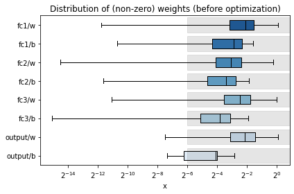
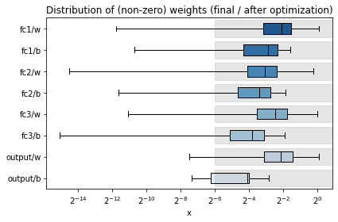
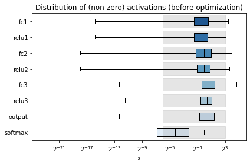
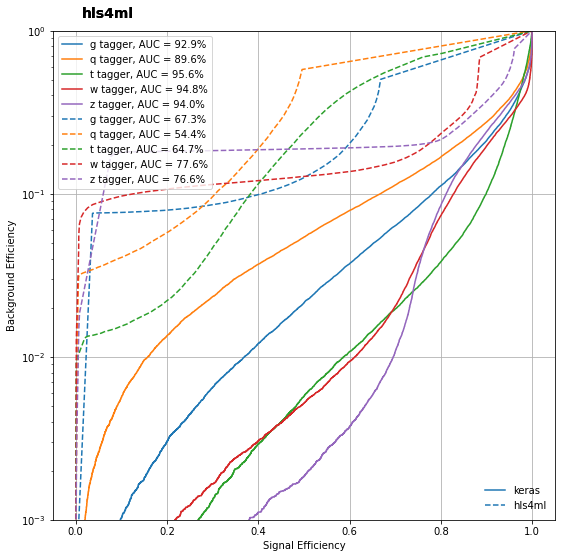
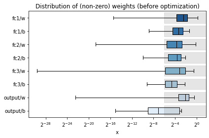
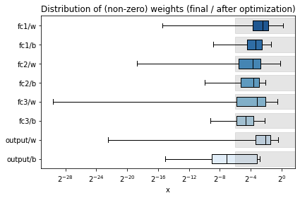
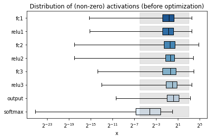
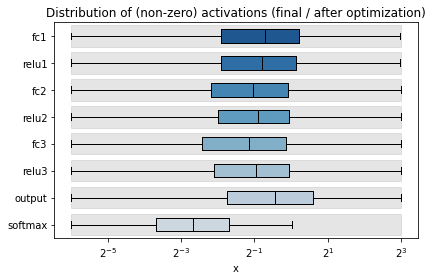
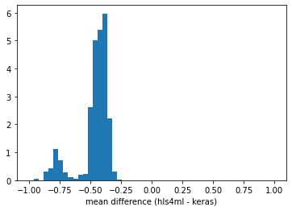
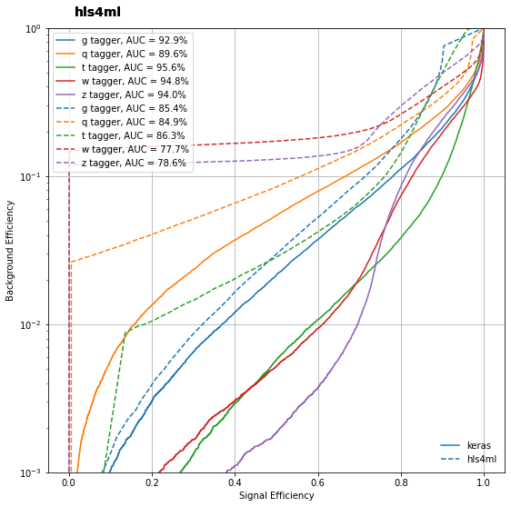

<!DOCTYPE html>

<html>
  <head>
    <meta charset="utf-8" />
    <meta name="viewport" content="width=device-width, initial-scale=1.0" /><meta name="generator" content="Docutils 0.17.1: http://docutils.sourceforge.net/" />

    <title>Advanced Configuration &#8212; IAIFI Summer School Tutorials</title>
    
  <!-- Loaded before other Sphinx assets -->
  <link href="_static/styles/theme.css?digest=1999514e3f237ded88cf" rel="stylesheet">
<link href="_static/styles/pydata-sphinx-theme.css?digest=1999514e3f237ded88cf" rel="stylesheet">

    
  <link rel="stylesheet"
    href="_static/vendor/fontawesome/5.13.0/css/all.min.css">
  <link rel="preload" as="font" type="font/woff2" crossorigin
    href="_static/vendor/fontawesome/5.13.0/webfonts/fa-solid-900.woff2">
  <link rel="preload" as="font" type="font/woff2" crossorigin
    href="_static/vendor/fontawesome/5.13.0/webfonts/fa-brands-400.woff2">

    <link rel="stylesheet" type="text/css" href="_static/pygments.css" />
    <link rel="stylesheet" href="_static/styles/sphinx-book-theme.css?digest=5115cc725059bd94278eecd172e13a965bf8f5a9" type="text/css" />
    <link rel="stylesheet" type="text/css" href="_static/togglebutton.css" />
    <link rel="stylesheet" type="text/css" href="_static/copybutton.css" />
    <link rel="stylesheet" type="text/css" href="_static/mystnb.css" />
    <link rel="stylesheet" type="text/css" href="_static/sphinx-thebe.css" />
    <link rel="stylesheet" type="text/css" href="_static/design-style.b7bb847fb20b106c3d81b95245e65545.min.css" />
    
  <!-- Pre-loaded scripts that we'll load fully later -->
  <link rel="preload" as="script" href="_static/scripts/pydata-sphinx-theme.js?digest=1999514e3f237ded88cf">

    <script data-url_root="./" id="documentation_options" src="_static/documentation_options.js"></script>
    <script src="_static/jquery.js"></script>
    <script src="_static/underscore.js"></script>
    <script src="_static/doctools.js"></script>
    <script src="_static/clipboard.min.js"></script>
    <script src="_static/copybutton.js"></script>
    <script src="_static/scripts/sphinx-book-theme.js?digest=9c920249402e914e316237a7dbc6769907cce411"></script>
    <script>let toggleHintShow = 'Click to show';</script>
    <script>let toggleHintHide = 'Click to hide';</script>
    <script>let toggleOpenOnPrint = 'true';</script>
    <script src="_static/togglebutton.js"></script>
    <script>var togglebuttonSelector = '.toggle, .admonition.dropdown, .tag_hide_input div.cell_input, .tag_hide-input div.cell_input, .tag_hide_output div.cell_output, .tag_hide-output div.cell_output, .tag_hide_cell.cell, .tag_hide-cell.cell';</script>
    <script src="_static/design-tabs.js"></script>
    <script>const THEBE_JS_URL = "https://unpkg.com/thebe@0.8.2/lib/index.js"
const thebe_selector = ".thebe,.cell"
const thebe_selector_input = "pre"
const thebe_selector_output = ".output, .cell_output"
</script>
    <script async="async" src="_static/sphinx-thebe.js"></script>
    <script>window.MathJax = {"options": {"processHtmlClass": "tex2jax_process|mathjax_process|math|output_area"}}</script>
    <script defer="defer" src="https://cdn.jsdelivr.net/npm/mathjax@3/es5/tex-mml-chtml.js"></script>
    <link rel="canonical" href="https://jduarte.physics.ucsd.edu/iaifi-summer-school/2.2_advanced_config.html" />
    <link rel="index" title="Index" href="genindex.html" />
    <link rel="search" title="Search" href="search.html" />
    <link rel="next" title="&lt;no title&gt;" href="2.3_compression.html" />
    <link rel="prev" title="Getting started" href="2.1_getting_started.html" />
    <meta name="viewport" content="width=device-width, initial-scale=1" />
    <meta name="docsearch:language" content="None">
    

    <!-- Google Analytics -->
    
  </head>
  <body data-spy="scroll" data-target="#bd-toc-nav" data-offset="60">
<!-- Checkboxes to toggle the left sidebar -->
<input type="checkbox" class="sidebar-toggle" name="__navigation" id="__navigation" aria-label="Toggle navigation sidebar">
<label class="overlay overlay-navbar" for="__navigation">
    <div class="visually-hidden">Toggle navigation sidebar</div>
</label>
<!-- Checkboxes to toggle the in-page toc -->
<input type="checkbox" class="sidebar-toggle" name="__page-toc" id="__page-toc" aria-label="Toggle in-page Table of Contents">
<label class="overlay overlay-pagetoc" for="__page-toc">
    <div class="visually-hidden">Toggle in-page Table of Contents</div>
</label>
<!-- Headers at the top -->
<div class="announcement header-item noprint"></div>
<div class="header header-item noprint"></div>

    
    <div class="container-fluid" id="banner"></div>

    

    <div class="container-xl">
      <div class="row">
          
<!-- Sidebar -->
<div class="bd-sidebar noprint" id="site-navigation">
    <div class="bd-sidebar__content">
        <div class="bd-sidebar__top"><div class="navbar-brand-box">
    <a class="navbar-brand text-wrap" href="index.html">
      
        <!-- `logo` is deprecated in Sphinx 4.0, so remove this when we stop supporting 3 -->
        
      
      
      
      
      
      <h1 class="site-logo" id="site-title">IAIFI Summer School Tutorials</h1>
      
    </a>
</div><form class="bd-search d-flex align-items-center" action="search.html" method="get">
  <i class="icon fas fa-search"></i>
  <input type="search" class="form-control" name="q" id="search-input" placeholder="Search this book..." aria-label="Search this book..." autocomplete="off" >
</form><nav class="bd-links" id="bd-docs-nav" aria-label="Main">
    <div class="bd-toc-item active">
        
        <ul class="nav bd-sidenav bd-sidenav__home-link">
            <li class="toctree-l1">
                <a class="reference internal" href="intro.html">
                    IAIFI Summer School Tutorials
                </a>
            </li>
        </ul>
        <p aria-level="2" class="caption" role="heading">
 <span class="caption-text">
  Representations, Networks, and Symmetries
 </span>
</p>
<ul class="nav bd-sidenav">
 <li class="toctree-l1">
  <a class="reference internal" href="1.1_tabular_data_efps.html">
   Tabular Data using Energy Flow Polynomials
  </a>
 </li>
 <li class="toctree-l1">
  <a class="reference internal" href="1.2_jet_images.html">
   Week 5 Notebook: Deep Learning from Jet Images
  </a>
 </li>
 <li class="toctree-l1">
  <a class="reference internal" href="1.3_deep_sets.html">
   Deep Sets
  </a>
 </li>
 <li class="toctree-l1">
  <a class="reference internal" href="1.4_gnn_in.html">
   Interaction Network GNN
  </a>
 </li>
 <li class="toctree-l1">
  <a class="reference internal" href="1.5_gnn_lorentz.html">
   Interaction Network
  </a>
 </li>
</ul>
<p aria-level="2" class="caption" role="heading">
 <span class="caption-text">
  Model Compression and Fast Machine Learning
 </span>
</p>
<ul class="current nav bd-sidenav">
 <li class="toctree-l1">
  <a class="reference internal" href="2.1_getting_started.html">
   Getting started
  </a>
 </li>
 <li class="toctree-l1 current active">
  <a class="current reference internal" href="#">
   Advanced Configuration
  </a>
 </li>
 <li class="toctree-l1">
  <a class="reference internal" href="2.4_quantization.html">
   Quantization
  </a>
 </li>
</ul>
<p aria-level="2" class="caption" role="heading">
 <span class="caption-text">
  References
 </span>
</p>
<ul class="nav bd-sidenav">
 <li class="toctree-l1">
  <a class="reference internal" href="zreferences.html">
   References
  </a>
 </li>
</ul>

    </div>
</nav></div>
        <div class="bd-sidebar__bottom">
             <!-- To handle the deprecated key -->
            
            <div class="navbar_extra_footer">
            Powered by <a href="https://jupyterbook.org">Jupyter Book</a>
            </div>
            
        </div>
    </div>
    <div id="rtd-footer-container"></div>
</div>


          


          
<!-- A tiny helper pixel to detect if we've scrolled -->
<div class="sbt-scroll-pixel-helper"></div>
<!-- Main content -->
<div class="col py-0 content-container">
    
    <div class="header-article row sticky-top noprint">
        


<div class="col py-1 d-flex header-article-main">
    <div class="header-article__left">
        
        <label for="__navigation"
  class="headerbtn"
  data-toggle="tooltip"
data-placement="right"
title="Toggle navigation"
>
  

<span class="headerbtn__icon-container">
  <i class="fas fa-bars"></i>
  </span>

</label>

        
    </div>
    <div class="header-article__right">
<div class="menu-dropdown menu-dropdown-launch-buttons">
  <button class="headerbtn menu-dropdown__trigger"
      aria-label="Launch interactive content">
      <i class="fas fa-rocket"></i>
  </button>
  <div class="menu-dropdown__content">
    <ul>
      <li>
        <a href="https://mybinder.org/v2/gh/jmduarte/iaifi-summer-school/main?urlpath=tree/book/2.2_advanced_config.ipynb"
   class="headerbtn"
   data-toggle="tooltip"
data-placement="left"
title="Launch on Binder"
>
  

<span class="headerbtn__icon-container">
  
    
  </span>
<span class="headerbtn__text-container">Binder</span>
</a>

      </li>
      
      <li>
        <a href="https://colab.research.google.com/github/jmduarte/iaifi-summer-school/blob/main/book/2.2_advanced_config.ipynb"
   class="headerbtn"
   data-toggle="tooltip"
data-placement="left"
title="Launch on Colab"
>
  

<span class="headerbtn__icon-container">
  
    
  </span>
<span class="headerbtn__text-container">Colab</span>
</a>

      </li>
      
    </ul>
  </div>
</div>

<button onclick="toggleFullScreen()"
  class="headerbtn"
  data-toggle="tooltip"
data-placement="bottom"
title="Fullscreen mode"
>
  

<span class="headerbtn__icon-container">
  <i class="fas fa-expand"></i>
  </span>

</button>

<div class="menu-dropdown menu-dropdown-repository-buttons">
  <button class="headerbtn menu-dropdown__trigger"
      aria-label="Source repositories">
      <i class="fab fa-github"></i>
  </button>
  <div class="menu-dropdown__content">
    <ul>
      <li>
        <a href="https://github.com/jmduarte/iaifi-summer-school"
   class="headerbtn"
   data-toggle="tooltip"
data-placement="left"
title="Source repository"
>
  

<span class="headerbtn__icon-container">
  <i class="fab fa-github"></i>
  </span>
<span class="headerbtn__text-container">repository</span>
</a>

      </li>
      
      <li>
        <a href="https://github.com/jmduarte/iaifi-summer-school/issues/new?title=Issue%20on%20page%20%2F2.2_advanced_config.html&body=Your%20issue%20content%20here."
   class="headerbtn"
   data-toggle="tooltip"
data-placement="left"
title="Open an issue"
>
  

<span class="headerbtn__icon-container">
  <i class="fas fa-lightbulb"></i>
  </span>
<span class="headerbtn__text-container">open issue</span>
</a>

      </li>
      
    </ul>
  </div>
</div>

<div class="menu-dropdown menu-dropdown-download-buttons">
  <button class="headerbtn menu-dropdown__trigger"
      aria-label="Download this page">
      <i class="fas fa-download"></i>
  </button>
  <div class="menu-dropdown__content">
    <ul>
      <li>
        <a href="_sources/2.2_advanced_config.ipynb"
   class="headerbtn"
   data-toggle="tooltip"
data-placement="left"
title="Download source file"
>
  

<span class="headerbtn__icon-container">
  <i class="fas fa-file"></i>
  </span>
<span class="headerbtn__text-container">.ipynb</span>
</a>

      </li>
      
      <li>
        
<button onclick="printPdf(this)"
  class="headerbtn"
  data-toggle="tooltip"
data-placement="left"
title="Print to PDF"
>
  

<span class="headerbtn__icon-container">
  <i class="fas fa-file-pdf"></i>
  </span>
<span class="headerbtn__text-container">.pdf</span>
</button>

      </li>
      
    </ul>
  </div>
</div>
<label for="__page-toc"
  class="headerbtn headerbtn-page-toc"
  
>
  

<span class="headerbtn__icon-container">
  <i class="fas fa-list"></i>
  </span>

</label>

    </div>
</div>

<!-- Table of contents -->
<div class="col-md-3 bd-toc show noprint">
    <div class="tocsection onthispage pt-5 pb-3">
        <i class="fas fa-list"></i> Contents
    </div>
    <nav id="bd-toc-nav" aria-label="Page">
        <ul class="visible nav section-nav flex-column">
 <li class="toc-h2 nav-item toc-entry">
  <a class="reference internal nav-link" href="#load-the-dataset-and-model-if-you-are-restarting-from-this-point">
   Load the dataset and model (if you are restarting from this point)
  </a>
 </li>
 <li class="toc-h2 nav-item toc-entry">
  <a class="reference internal nav-link" href="#make-a-new-hls4ml-config-model">
   Make a new hls4ml config &amp; model
  </a>
 </li>
 <li class="toc-h2 nav-item toc-entry">
  <a class="reference internal nav-link" href="#profiling">
   Profiling
  </a>
 </li>
 <li class="toc-h2 nav-item toc-entry">
  <a class="reference internal nav-link" href="#trace">
   Trace
  </a>
 </li>
 <li class="toc-h2 nav-item toc-entry">
  <a class="reference internal nav-link" href="#inspect">
   Inspect
  </a>
 </li>
 <li class="toc-h2 nav-item toc-entry">
  <a class="reference internal nav-link" href="#compare">
   Compare
  </a>
  <ul class="nav section-nav flex-column">
   <li class="toc-h3 nav-item toc-entry">
    <a class="reference internal nav-link" href="#improving">
     Improving
    </a>
   </li>
  </ul>
 </li>
</ul>

    </nav>
</div>
    </div>
    <div class="article row">
        <div class="col pl-md-3 pl-lg-5 content-container">
            <!-- Table of contents that is only displayed when printing the page -->
            <div id="jb-print-docs-body" class="onlyprint">
                <h1>Advanced Configuration</h1>
                <!-- Table of contents -->
                <div id="print-main-content">
                    <div id="jb-print-toc">
                        
                        <div>
                            <h2> Contents </h2>
                        </div>
                        <nav aria-label="Page">
                            <ul class="visible nav section-nav flex-column">
 <li class="toc-h2 nav-item toc-entry">
  <a class="reference internal nav-link" href="#load-the-dataset-and-model-if-you-are-restarting-from-this-point">
   Load the dataset and model (if you are restarting from this point)
  </a>
 </li>
 <li class="toc-h2 nav-item toc-entry">
  <a class="reference internal nav-link" href="#make-a-new-hls4ml-config-model">
   Make a new hls4ml config &amp; model
  </a>
 </li>
 <li class="toc-h2 nav-item toc-entry">
  <a class="reference internal nav-link" href="#profiling">
   Profiling
  </a>
 </li>
 <li class="toc-h2 nav-item toc-entry">
  <a class="reference internal nav-link" href="#trace">
   Trace
  </a>
 </li>
 <li class="toc-h2 nav-item toc-entry">
  <a class="reference internal nav-link" href="#inspect">
   Inspect
  </a>
 </li>
 <li class="toc-h2 nav-item toc-entry">
  <a class="reference internal nav-link" href="#compare">
   Compare
  </a>
  <ul class="nav section-nav flex-column">
   <li class="toc-h3 nav-item toc-entry">
    <a class="reference internal nav-link" href="#improving">
     Improving
    </a>
   </li>
  </ul>
 </li>
</ul>

                        </nav>
                    </div>
                </div>
            </div>
            <main id="main-content" role="main">
                
              <div>
                
  <div class="cell docutils container">
<div class="cell_input docutils container">
<div class="highlight-ipython3 notranslate"><div class="highlight"><pre><span></span><span class="o">!</span>apt-get  -qq  install  -y  graphviz  <span class="o">&amp;&amp;</span>  pip  install  pydot
<span class="o">!</span>pip  install  -U  matplotlib
<span class="o">!</span>pip  install  git+https://github.com/fastmachinelearning/hls4ml.git@main#egg<span class="o">=</span>hls4ml<span class="o">[</span>profiling<span class="o">]</span>
<span class="o">!</span>pip  install  <span class="nv">qkeras</span><span class="o">==</span><span class="m">0</span>.9.0
</pre></div>
</div>
</div>
<div class="cell_output docutils container">
<div class="output stream highlight-myst-ansi notranslate"><div class="highlight"><pre><span></span>E: Could not open lock file /var/lib/dpkg/lock-frontend - open (13: Permission denied)
E: Unable to acquire the dpkg frontend lock (/var/lib/dpkg/lock-frontend), are you root?
</pre></div>
</div>
<div class="output stream highlight-myst-ansi notranslate"><div class="highlight"><pre><span></span>Requirement already satisfied: matplotlib in /opt/hostedtoolcache/Python/3.7.13/x64/lib/python3.7/site-packages (3.5.2)
</pre></div>
</div>
<div class="output stream highlight-myst-ansi notranslate"><div class="highlight"><pre><span></span>Requirement already satisfied: fonttools&gt;=4.22.0 in /opt/hostedtoolcache/Python/3.7.13/x64/lib/python3.7/site-packages (from matplotlib) (4.34.4)
Requirement already satisfied: kiwisolver&gt;=1.0.1 in /opt/hostedtoolcache/Python/3.7.13/x64/lib/python3.7/site-packages (from matplotlib) (1.4.4)
Requirement already satisfied: packaging&gt;=20.0 in /opt/hostedtoolcache/Python/3.7.13/x64/lib/python3.7/site-packages (from matplotlib) (21.3)
Requirement already satisfied: pillow&gt;=6.2.0 in /opt/hostedtoolcache/Python/3.7.13/x64/lib/python3.7/site-packages (from matplotlib) (9.2.0)
Requirement already satisfied: python-dateutil&gt;=2.7 in /opt/hostedtoolcache/Python/3.7.13/x64/lib/python3.7/site-packages (from matplotlib) (2.8.2)
Requirement already satisfied: cycler&gt;=0.10 in /opt/hostedtoolcache/Python/3.7.13/x64/lib/python3.7/site-packages (from matplotlib) (0.11.0)
Requirement already satisfied: numpy&gt;=1.17 in /opt/hostedtoolcache/Python/3.7.13/x64/lib/python3.7/site-packages (from matplotlib) (1.21.6)
Requirement already satisfied: pyparsing&gt;=2.2.1 in /opt/hostedtoolcache/Python/3.7.13/x64/lib/python3.7/site-packages (from matplotlib) (3.0.9)
</pre></div>
</div>
<div class="output stream highlight-myst-ansi notranslate"><div class="highlight"><pre><span></span>Requirement already satisfied: typing-extensions in /opt/hostedtoolcache/Python/3.7.13/x64/lib/python3.7/site-packages (from kiwisolver&gt;=1.0.1-&gt;matplotlib) (4.3.0)
Requirement already satisfied: six&gt;=1.5 in /opt/hostedtoolcache/Python/3.7.13/x64/lib/python3.7/site-packages (from python-dateutil&gt;=2.7-&gt;matplotlib) (1.16.0)
</pre></div>
</div>
<div class="output stream highlight-myst-ansi notranslate"><div class="highlight"><pre><span></span>Collecting hls4ml[profiling]
  Cloning https://github.com/fastmachinelearning/hls4ml.git (to revision main) to /tmp/pip-install-xlvv8hh6/hls4ml_ab09df64755b461f9d67295c17e321fd
  Running command git clone --filter=blob:none --quiet https://github.com/fastmachinelearning/hls4ml.git /tmp/pip-install-xlvv8hh6/hls4ml_ab09df64755b461f9d67295c17e321fd
</pre></div>
</div>
<div class="output stream highlight-myst-ansi notranslate"><div class="highlight"><pre><span></span>  Resolved https://github.com/fastmachinelearning/hls4ml.git to commit 62046d799a4dbec150addc7f78fea5b579efeda1
  Running command git submodule update --init --recursive -q
</pre></div>
</div>
<div class="output stream highlight-myst-ansi notranslate"><div class="highlight"><pre><span></span>  Preparing metadata (setup.py) ... ?25l-
</pre></div>
</div>
<div class="output stream highlight-myst-ansi notranslate"><div class="highlight"><pre><span></span> done
</pre></div>
</div>
<div class="output stream highlight-myst-ansi notranslate"><div class="highlight"><pre><span></span>?25hRequirement already satisfied: numpy in /opt/hostedtoolcache/Python/3.7.13/x64/lib/python3.7/site-packages (from hls4ml[profiling]) (1.21.6)
Requirement already satisfied: six in /opt/hostedtoolcache/Python/3.7.13/x64/lib/python3.7/site-packages (from hls4ml[profiling]) (1.16.0)
Requirement already satisfied: pyyaml in /opt/hostedtoolcache/Python/3.7.13/x64/lib/python3.7/site-packages (from hls4ml[profiling]) (6.0)
Requirement already satisfied: h5py in /opt/hostedtoolcache/Python/3.7.13/x64/lib/python3.7/site-packages (from hls4ml[profiling]) (3.7.0)
Requirement already satisfied: onnx&gt;=1.4.0 in /opt/hostedtoolcache/Python/3.7.13/x64/lib/python3.7/site-packages (from hls4ml[profiling]) (1.12.0)
Requirement already satisfied: calmjs.parse in /opt/hostedtoolcache/Python/3.7.13/x64/lib/python3.7/site-packages (from hls4ml[profiling]) (1.3.0)
Requirement already satisfied: tabulate in /opt/hostedtoolcache/Python/3.7.13/x64/lib/python3.7/site-packages (from hls4ml[profiling]) (0.8.10)
Requirement already satisfied: pydigitalwavetools==1.1 in /opt/hostedtoolcache/Python/3.7.13/x64/lib/python3.7/site-packages (from hls4ml[profiling]) (1.1)
Requirement already satisfied: qkeras in /opt/hostedtoolcache/Python/3.7.13/x64/lib/python3.7/site-packages (from hls4ml[profiling]) (0.9.0)
Requirement already satisfied: pandas in /opt/hostedtoolcache/Python/3.7.13/x64/lib/python3.7/site-packages (from hls4ml[profiling]) (1.3.5)
Requirement already satisfied: seaborn in /opt/hostedtoolcache/Python/3.7.13/x64/lib/python3.7/site-packages (from hls4ml[profiling]) (0.11.2)
Requirement already satisfied: matplotlib in /opt/hostedtoolcache/Python/3.7.13/x64/lib/python3.7/site-packages (from hls4ml[profiling]) (3.5.2)
Requirement already satisfied: protobuf&lt;=3.20.1,&gt;=3.12.2 in /opt/hostedtoolcache/Python/3.7.13/x64/lib/python3.7/site-packages (from onnx&gt;=1.4.0-&gt;hls4ml[profiling]) (3.19.4)
Requirement already satisfied: typing-extensions&gt;=3.6.2.1 in /opt/hostedtoolcache/Python/3.7.13/x64/lib/python3.7/site-packages (from onnx&gt;=1.4.0-&gt;hls4ml[profiling]) (4.3.0)
Requirement already satisfied: ply&gt;=3.6 in /opt/hostedtoolcache/Python/3.7.13/x64/lib/python3.7/site-packages (from calmjs.parse-&gt;hls4ml[profiling]) (3.11)
Requirement already satisfied: setuptools in /opt/hostedtoolcache/Python/3.7.13/x64/lib/python3.7/site-packages (from calmjs.parse-&gt;hls4ml[profiling]) (63.2.0)
Requirement already satisfied: packaging&gt;=20.0 in /opt/hostedtoolcache/Python/3.7.13/x64/lib/python3.7/site-packages (from matplotlib-&gt;hls4ml[profiling]) (21.3)
Requirement already satisfied: fonttools&gt;=4.22.0 in /opt/hostedtoolcache/Python/3.7.13/x64/lib/python3.7/site-packages (from matplotlib-&gt;hls4ml[profiling]) (4.34.4)
Requirement already satisfied: pyparsing&gt;=2.2.1 in /opt/hostedtoolcache/Python/3.7.13/x64/lib/python3.7/site-packages (from matplotlib-&gt;hls4ml[profiling]) (3.0.9)
Requirement already satisfied: python-dateutil&gt;=2.7 in /opt/hostedtoolcache/Python/3.7.13/x64/lib/python3.7/site-packages (from matplotlib-&gt;hls4ml[profiling]) (2.8.2)
Requirement already satisfied: pillow&gt;=6.2.0 in /opt/hostedtoolcache/Python/3.7.13/x64/lib/python3.7/site-packages (from matplotlib-&gt;hls4ml[profiling]) (9.2.0)
Requirement already satisfied: kiwisolver&gt;=1.0.1 in /opt/hostedtoolcache/Python/3.7.13/x64/lib/python3.7/site-packages (from matplotlib-&gt;hls4ml[profiling]) (1.4.4)
Requirement already satisfied: cycler&gt;=0.10 in /opt/hostedtoolcache/Python/3.7.13/x64/lib/python3.7/site-packages (from matplotlib-&gt;hls4ml[profiling]) (0.11.0)
</pre></div>
</div>
<div class="output stream highlight-myst-ansi notranslate"><div class="highlight"><pre><span></span>Requirement already satisfied: pytz&gt;=2017.3 in /opt/hostedtoolcache/Python/3.7.13/x64/lib/python3.7/site-packages (from pandas-&gt;hls4ml[profiling]) (2022.1)
Requirement already satisfied: keras-tuner&gt;=1.0.1 in /opt/hostedtoolcache/Python/3.7.13/x64/lib/python3.7/site-packages (from qkeras-&gt;hls4ml[profiling]) (1.1.3)
Requirement already satisfied: tensorflow-model-optimization&gt;=0.2.1 in /opt/hostedtoolcache/Python/3.7.13/x64/lib/python3.7/site-packages (from qkeras-&gt;hls4ml[profiling]) (0.7.3)
Requirement already satisfied: pyparser in /opt/hostedtoolcache/Python/3.7.13/x64/lib/python3.7/site-packages (from qkeras-&gt;hls4ml[profiling]) (1.0)
Requirement already satisfied: scikit-learn&gt;=0.23.1 in /opt/hostedtoolcache/Python/3.7.13/x64/lib/python3.7/site-packages (from qkeras-&gt;hls4ml[profiling]) (1.0.2)
Requirement already satisfied: tqdm&gt;=4.48.0 in /opt/hostedtoolcache/Python/3.7.13/x64/lib/python3.7/site-packages (from qkeras-&gt;hls4ml[profiling]) (4.64.0)
Requirement already satisfied: networkx&gt;=2.1 in /opt/hostedtoolcache/Python/3.7.13/x64/lib/python3.7/site-packages (from qkeras-&gt;hls4ml[profiling]) (2.6.3)
Requirement already satisfied: scipy&gt;=1.4.1 in /opt/hostedtoolcache/Python/3.7.13/x64/lib/python3.7/site-packages (from qkeras-&gt;hls4ml[profiling]) (1.7.3)
</pre></div>
</div>
<div class="output stream highlight-myst-ansi notranslate"><div class="highlight"><pre><span></span>Requirement already satisfied: requests in /opt/hostedtoolcache/Python/3.7.13/x64/lib/python3.7/site-packages (from keras-tuner&gt;=1.0.1-&gt;qkeras-&gt;hls4ml[profiling]) (2.28.1)
Requirement already satisfied: kt-legacy in /opt/hostedtoolcache/Python/3.7.13/x64/lib/python3.7/site-packages (from keras-tuner&gt;=1.0.1-&gt;qkeras-&gt;hls4ml[profiling]) (1.0.4)
Requirement already satisfied: tensorboard in /opt/hostedtoolcache/Python/3.7.13/x64/lib/python3.7/site-packages (from keras-tuner&gt;=1.0.1-&gt;qkeras-&gt;hls4ml[profiling]) (2.9.1)
Requirement already satisfied: ipython in /opt/hostedtoolcache/Python/3.7.13/x64/lib/python3.7/site-packages (from keras-tuner&gt;=1.0.1-&gt;qkeras-&gt;hls4ml[profiling]) (7.34.0)
</pre></div>
</div>
<div class="output stream highlight-myst-ansi notranslate"><div class="highlight"><pre><span></span>Requirement already satisfied: threadpoolctl&gt;=2.0.0 in /opt/hostedtoolcache/Python/3.7.13/x64/lib/python3.7/site-packages (from scikit-learn&gt;=0.23.1-&gt;qkeras-&gt;hls4ml[profiling]) (3.1.0)
Requirement already satisfied: joblib&gt;=0.11 in /opt/hostedtoolcache/Python/3.7.13/x64/lib/python3.7/site-packages (from scikit-learn&gt;=0.23.1-&gt;qkeras-&gt;hls4ml[profiling]) (1.1.0)
Requirement already satisfied: dm-tree~=0.1.1 in /opt/hostedtoolcache/Python/3.7.13/x64/lib/python3.7/site-packages (from tensorflow-model-optimization&gt;=0.2.1-&gt;qkeras-&gt;hls4ml[profiling]) (0.1.7)
Requirement already satisfied: parse==1.6.5 in /opt/hostedtoolcache/Python/3.7.13/x64/lib/python3.7/site-packages (from pyparser-&gt;qkeras-&gt;hls4ml[profiling]) (1.6.5)
</pre></div>
</div>
<div class="output stream highlight-myst-ansi notranslate"><div class="highlight"><pre><span></span>Requirement already satisfied: matplotlib-inline in /opt/hostedtoolcache/Python/3.7.13/x64/lib/python3.7/site-packages (from ipython-&gt;keras-tuner&gt;=1.0.1-&gt;qkeras-&gt;hls4ml[profiling]) (0.1.3)
Requirement already satisfied: decorator in /opt/hostedtoolcache/Python/3.7.13/x64/lib/python3.7/site-packages (from ipython-&gt;keras-tuner&gt;=1.0.1-&gt;qkeras-&gt;hls4ml[profiling]) (5.1.1)
Requirement already satisfied: jedi&gt;=0.16 in /opt/hostedtoolcache/Python/3.7.13/x64/lib/python3.7/site-packages (from ipython-&gt;keras-tuner&gt;=1.0.1-&gt;qkeras-&gt;hls4ml[profiling]) (0.18.1)
Requirement already satisfied: backcall in /opt/hostedtoolcache/Python/3.7.13/x64/lib/python3.7/site-packages (from ipython-&gt;keras-tuner&gt;=1.0.1-&gt;qkeras-&gt;hls4ml[profiling]) (0.2.0)
Requirement already satisfied: pickleshare in /opt/hostedtoolcache/Python/3.7.13/x64/lib/python3.7/site-packages (from ipython-&gt;keras-tuner&gt;=1.0.1-&gt;qkeras-&gt;hls4ml[profiling]) (0.7.5)
Requirement already satisfied: pygments in /opt/hostedtoolcache/Python/3.7.13/x64/lib/python3.7/site-packages (from ipython-&gt;keras-tuner&gt;=1.0.1-&gt;qkeras-&gt;hls4ml[profiling]) (2.12.0)
Requirement already satisfied: pexpect&gt;4.3 in /opt/hostedtoolcache/Python/3.7.13/x64/lib/python3.7/site-packages (from ipython-&gt;keras-tuner&gt;=1.0.1-&gt;qkeras-&gt;hls4ml[profiling]) (4.8.0)
Requirement already satisfied: prompt-toolkit!=3.0.0,!=3.0.1,&lt;3.1.0,&gt;=2.0.0 in /opt/hostedtoolcache/Python/3.7.13/x64/lib/python3.7/site-packages (from ipython-&gt;keras-tuner&gt;=1.0.1-&gt;qkeras-&gt;hls4ml[profiling]) (3.0.30)
Requirement already satisfied: traitlets&gt;=4.2 in /opt/hostedtoolcache/Python/3.7.13/x64/lib/python3.7/site-packages (from ipython-&gt;keras-tuner&gt;=1.0.1-&gt;qkeras-&gt;hls4ml[profiling]) (5.3.0)
Requirement already satisfied: charset-normalizer&lt;3,&gt;=2 in /opt/hostedtoolcache/Python/3.7.13/x64/lib/python3.7/site-packages (from requests-&gt;keras-tuner&gt;=1.0.1-&gt;qkeras-&gt;hls4ml[profiling]) (2.1.0)
Requirement already satisfied: certifi&gt;=2017.4.17 in /opt/hostedtoolcache/Python/3.7.13/x64/lib/python3.7/site-packages (from requests-&gt;keras-tuner&gt;=1.0.1-&gt;qkeras-&gt;hls4ml[profiling]) (2022.6.15)
Requirement already satisfied: urllib3&lt;1.27,&gt;=1.21.1 in /opt/hostedtoolcache/Python/3.7.13/x64/lib/python3.7/site-packages (from requests-&gt;keras-tuner&gt;=1.0.1-&gt;qkeras-&gt;hls4ml[profiling]) (1.26.11)
Requirement already satisfied: idna&lt;4,&gt;=2.5 in /opt/hostedtoolcache/Python/3.7.13/x64/lib/python3.7/site-packages (from requests-&gt;keras-tuner&gt;=1.0.1-&gt;qkeras-&gt;hls4ml[profiling]) (3.3)
</pre></div>
</div>
<div class="output stream highlight-myst-ansi notranslate"><div class="highlight"><pre><span></span>Requirement already satisfied: grpcio&gt;=1.24.3 in /opt/hostedtoolcache/Python/3.7.13/x64/lib/python3.7/site-packages (from tensorboard-&gt;keras-tuner&gt;=1.0.1-&gt;qkeras-&gt;hls4ml[profiling]) (1.48.0)
Requirement already satisfied: absl-py&gt;=0.4 in /opt/hostedtoolcache/Python/3.7.13/x64/lib/python3.7/site-packages (from tensorboard-&gt;keras-tuner&gt;=1.0.1-&gt;qkeras-&gt;hls4ml[profiling]) (1.2.0)
Requirement already satisfied: tensorboard-data-server&lt;0.7.0,&gt;=0.6.0 in /opt/hostedtoolcache/Python/3.7.13/x64/lib/python3.7/site-packages (from tensorboard-&gt;keras-tuner&gt;=1.0.1-&gt;qkeras-&gt;hls4ml[profiling]) (0.6.1)
Requirement already satisfied: werkzeug&gt;=1.0.1 in /opt/hostedtoolcache/Python/3.7.13/x64/lib/python3.7/site-packages (from tensorboard-&gt;keras-tuner&gt;=1.0.1-&gt;qkeras-&gt;hls4ml[profiling]) (2.2.1)
Requirement already satisfied: wheel&gt;=0.26 in /opt/hostedtoolcache/Python/3.7.13/x64/lib/python3.7/site-packages (from tensorboard-&gt;keras-tuner&gt;=1.0.1-&gt;qkeras-&gt;hls4ml[profiling]) (0.37.1)
Requirement already satisfied: tensorboard-plugin-wit&gt;=1.6.0 in /opt/hostedtoolcache/Python/3.7.13/x64/lib/python3.7/site-packages (from tensorboard-&gt;keras-tuner&gt;=1.0.1-&gt;qkeras-&gt;hls4ml[profiling]) (1.8.1)
Requirement already satisfied: google-auth&lt;3,&gt;=1.6.3 in /opt/hostedtoolcache/Python/3.7.13/x64/lib/python3.7/site-packages (from tensorboard-&gt;keras-tuner&gt;=1.0.1-&gt;qkeras-&gt;hls4ml[profiling]) (2.9.1)
Requirement already satisfied: markdown&gt;=2.6.8 in /opt/hostedtoolcache/Python/3.7.13/x64/lib/python3.7/site-packages (from tensorboard-&gt;keras-tuner&gt;=1.0.1-&gt;qkeras-&gt;hls4ml[profiling]) (3.4.1)
Requirement already satisfied: google-auth-oauthlib&lt;0.5,&gt;=0.4.1 in /opt/hostedtoolcache/Python/3.7.13/x64/lib/python3.7/site-packages (from tensorboard-&gt;keras-tuner&gt;=1.0.1-&gt;qkeras-&gt;hls4ml[profiling]) (0.4.6)
</pre></div>
</div>
<div class="output stream highlight-myst-ansi notranslate"><div class="highlight"><pre><span></span>Requirement already satisfied: rsa&lt;5,&gt;=3.1.4 in /opt/hostedtoolcache/Python/3.7.13/x64/lib/python3.7/site-packages (from google-auth&lt;3,&gt;=1.6.3-&gt;tensorboard-&gt;keras-tuner&gt;=1.0.1-&gt;qkeras-&gt;hls4ml[profiling]) (4.9)
Requirement already satisfied: pyasn1-modules&gt;=0.2.1 in /opt/hostedtoolcache/Python/3.7.13/x64/lib/python3.7/site-packages (from google-auth&lt;3,&gt;=1.6.3-&gt;tensorboard-&gt;keras-tuner&gt;=1.0.1-&gt;qkeras-&gt;hls4ml[profiling]) (0.2.8)
Requirement already satisfied: cachetools&lt;6.0,&gt;=2.0.0 in /opt/hostedtoolcache/Python/3.7.13/x64/lib/python3.7/site-packages (from google-auth&lt;3,&gt;=1.6.3-&gt;tensorboard-&gt;keras-tuner&gt;=1.0.1-&gt;qkeras-&gt;hls4ml[profiling]) (5.2.0)
Requirement already satisfied: requests-oauthlib&gt;=0.7.0 in /opt/hostedtoolcache/Python/3.7.13/x64/lib/python3.7/site-packages (from google-auth-oauthlib&lt;0.5,&gt;=0.4.1-&gt;tensorboard-&gt;keras-tuner&gt;=1.0.1-&gt;qkeras-&gt;hls4ml[profiling]) (1.3.1)
</pre></div>
</div>
<div class="output stream highlight-myst-ansi notranslate"><div class="highlight"><pre><span></span>Requirement already satisfied: parso&lt;0.9.0,&gt;=0.8.0 in /opt/hostedtoolcache/Python/3.7.13/x64/lib/python3.7/site-packages (from jedi&gt;=0.16-&gt;ipython-&gt;keras-tuner&gt;=1.0.1-&gt;qkeras-&gt;hls4ml[profiling]) (0.8.3)
Requirement already satisfied: importlib-metadata&gt;=4.4 in /opt/hostedtoolcache/Python/3.7.13/x64/lib/python3.7/site-packages (from markdown&gt;=2.6.8-&gt;tensorboard-&gt;keras-tuner&gt;=1.0.1-&gt;qkeras-&gt;hls4ml[profiling]) (4.12.0)
Requirement already satisfied: ptyprocess&gt;=0.5 in /opt/hostedtoolcache/Python/3.7.13/x64/lib/python3.7/site-packages (from pexpect&gt;4.3-&gt;ipython-&gt;keras-tuner&gt;=1.0.1-&gt;qkeras-&gt;hls4ml[profiling]) (0.7.0)
Requirement already satisfied: wcwidth in /opt/hostedtoolcache/Python/3.7.13/x64/lib/python3.7/site-packages (from prompt-toolkit!=3.0.0,!=3.0.1,&lt;3.1.0,&gt;=2.0.0-&gt;ipython-&gt;keras-tuner&gt;=1.0.1-&gt;qkeras-&gt;hls4ml[profiling]) (0.2.5)
</pre></div>
</div>
<div class="output stream highlight-myst-ansi notranslate"><div class="highlight"><pre><span></span>Requirement already satisfied: MarkupSafe&gt;=2.1.1 in /opt/hostedtoolcache/Python/3.7.13/x64/lib/python3.7/site-packages (from werkzeug&gt;=1.0.1-&gt;tensorboard-&gt;keras-tuner&gt;=1.0.1-&gt;qkeras-&gt;hls4ml[profiling]) (2.1.1)
</pre></div>
</div>
<div class="output stream highlight-myst-ansi notranslate"><div class="highlight"><pre><span></span>Requirement already satisfied: zipp&gt;=0.5 in /opt/hostedtoolcache/Python/3.7.13/x64/lib/python3.7/site-packages (from importlib-metadata&gt;=4.4-&gt;markdown&gt;=2.6.8-&gt;tensorboard-&gt;keras-tuner&gt;=1.0.1-&gt;qkeras-&gt;hls4ml[profiling]) (3.8.1)
Requirement already satisfied: pyasn1&lt;0.5.0,&gt;=0.4.6 in /opt/hostedtoolcache/Python/3.7.13/x64/lib/python3.7/site-packages (from pyasn1-modules&gt;=0.2.1-&gt;google-auth&lt;3,&gt;=1.6.3-&gt;tensorboard-&gt;keras-tuner&gt;=1.0.1-&gt;qkeras-&gt;hls4ml[profiling]) (0.4.8)
Requirement already satisfied: oauthlib&gt;=3.0.0 in /opt/hostedtoolcache/Python/3.7.13/x64/lib/python3.7/site-packages (from requests-oauthlib&gt;=0.7.0-&gt;google-auth-oauthlib&lt;0.5,&gt;=0.4.1-&gt;tensorboard-&gt;keras-tuner&gt;=1.0.1-&gt;qkeras-&gt;hls4ml[profiling]) (3.2.0)
</pre></div>
</div>
<div class="output stream highlight-myst-ansi notranslate"><div class="highlight"><pre><span></span>Requirement already satisfied: qkeras==0.9.0 in /opt/hostedtoolcache/Python/3.7.13/x64/lib/python3.7/site-packages (0.9.0)
Requirement already satisfied: keras-tuner&gt;=1.0.1 in /opt/hostedtoolcache/Python/3.7.13/x64/lib/python3.7/site-packages (from qkeras==0.9.0) (1.1.3)
Requirement already satisfied: pyparser in /opt/hostedtoolcache/Python/3.7.13/x64/lib/python3.7/site-packages (from qkeras==0.9.0) (1.0)
Requirement already satisfied: scikit-learn&gt;=0.23.1 in /opt/hostedtoolcache/Python/3.7.13/x64/lib/python3.7/site-packages (from qkeras==0.9.0) (1.0.2)
Requirement already satisfied: tensorflow-model-optimization&gt;=0.2.1 in /opt/hostedtoolcache/Python/3.7.13/x64/lib/python3.7/site-packages (from qkeras==0.9.0) (0.7.3)
Requirement already satisfied: networkx&gt;=2.1 in /opt/hostedtoolcache/Python/3.7.13/x64/lib/python3.7/site-packages (from qkeras==0.9.0) (2.6.3)
Requirement already satisfied: tqdm&gt;=4.48.0 in /opt/hostedtoolcache/Python/3.7.13/x64/lib/python3.7/site-packages (from qkeras==0.9.0) (4.64.0)
Requirement already satisfied: numpy&gt;=1.16.0 in /opt/hostedtoolcache/Python/3.7.13/x64/lib/python3.7/site-packages (from qkeras==0.9.0) (1.21.6)
Requirement already satisfied: setuptools&gt;=41.0.0 in /opt/hostedtoolcache/Python/3.7.13/x64/lib/python3.7/site-packages (from qkeras==0.9.0) (63.2.0)
Requirement already satisfied: scipy&gt;=1.4.1 in /opt/hostedtoolcache/Python/3.7.13/x64/lib/python3.7/site-packages (from qkeras==0.9.0) (1.7.3)
</pre></div>
</div>
<div class="output stream highlight-myst-ansi notranslate"><div class="highlight"><pre><span></span>Requirement already satisfied: requests in /opt/hostedtoolcache/Python/3.7.13/x64/lib/python3.7/site-packages (from keras-tuner&gt;=1.0.1-&gt;qkeras==0.9.0) (2.28.1)
Requirement already satisfied: kt-legacy in /opt/hostedtoolcache/Python/3.7.13/x64/lib/python3.7/site-packages (from keras-tuner&gt;=1.0.1-&gt;qkeras==0.9.0) (1.0.4)
Requirement already satisfied: tensorboard in /opt/hostedtoolcache/Python/3.7.13/x64/lib/python3.7/site-packages (from keras-tuner&gt;=1.0.1-&gt;qkeras==0.9.0) (2.9.1)
Requirement already satisfied: ipython in /opt/hostedtoolcache/Python/3.7.13/x64/lib/python3.7/site-packages (from keras-tuner&gt;=1.0.1-&gt;qkeras==0.9.0) (7.34.0)
Requirement already satisfied: packaging in /opt/hostedtoolcache/Python/3.7.13/x64/lib/python3.7/site-packages (from keras-tuner&gt;=1.0.1-&gt;qkeras==0.9.0) (21.3)
</pre></div>
</div>
<div class="output stream highlight-myst-ansi notranslate"><div class="highlight"><pre><span></span>Requirement already satisfied: joblib&gt;=0.11 in /opt/hostedtoolcache/Python/3.7.13/x64/lib/python3.7/site-packages (from scikit-learn&gt;=0.23.1-&gt;qkeras==0.9.0) (1.1.0)
Requirement already satisfied: threadpoolctl&gt;=2.0.0 in /opt/hostedtoolcache/Python/3.7.13/x64/lib/python3.7/site-packages (from scikit-learn&gt;=0.23.1-&gt;qkeras==0.9.0) (3.1.0)
Requirement already satisfied: dm-tree~=0.1.1 in /opt/hostedtoolcache/Python/3.7.13/x64/lib/python3.7/site-packages (from tensorflow-model-optimization&gt;=0.2.1-&gt;qkeras==0.9.0) (0.1.7)
Requirement already satisfied: six~=1.10 in /opt/hostedtoolcache/Python/3.7.13/x64/lib/python3.7/site-packages (from tensorflow-model-optimization&gt;=0.2.1-&gt;qkeras==0.9.0) (1.16.0)
Requirement already satisfied: parse==1.6.5 in /opt/hostedtoolcache/Python/3.7.13/x64/lib/python3.7/site-packages (from pyparser-&gt;qkeras==0.9.0) (1.6.5)
</pre></div>
</div>
<div class="output stream highlight-myst-ansi notranslate"><div class="highlight"><pre><span></span>Requirement already satisfied: pygments in /opt/hostedtoolcache/Python/3.7.13/x64/lib/python3.7/site-packages (from ipython-&gt;keras-tuner&gt;=1.0.1-&gt;qkeras==0.9.0) (2.12.0)
Requirement already satisfied: jedi&gt;=0.16 in /opt/hostedtoolcache/Python/3.7.13/x64/lib/python3.7/site-packages (from ipython-&gt;keras-tuner&gt;=1.0.1-&gt;qkeras==0.9.0) (0.18.1)
Requirement already satisfied: traitlets&gt;=4.2 in /opt/hostedtoolcache/Python/3.7.13/x64/lib/python3.7/site-packages (from ipython-&gt;keras-tuner&gt;=1.0.1-&gt;qkeras==0.9.0) (5.3.0)
Requirement already satisfied: pickleshare in /opt/hostedtoolcache/Python/3.7.13/x64/lib/python3.7/site-packages (from ipython-&gt;keras-tuner&gt;=1.0.1-&gt;qkeras==0.9.0) (0.7.5)
Requirement already satisfied: decorator in /opt/hostedtoolcache/Python/3.7.13/x64/lib/python3.7/site-packages (from ipython-&gt;keras-tuner&gt;=1.0.1-&gt;qkeras==0.9.0) (5.1.1)
Requirement already satisfied: pexpect&gt;4.3 in /opt/hostedtoolcache/Python/3.7.13/x64/lib/python3.7/site-packages (from ipython-&gt;keras-tuner&gt;=1.0.1-&gt;qkeras==0.9.0) (4.8.0)
Requirement already satisfied: matplotlib-inline in /opt/hostedtoolcache/Python/3.7.13/x64/lib/python3.7/site-packages (from ipython-&gt;keras-tuner&gt;=1.0.1-&gt;qkeras==0.9.0) (0.1.3)
Requirement already satisfied: backcall in /opt/hostedtoolcache/Python/3.7.13/x64/lib/python3.7/site-packages (from ipython-&gt;keras-tuner&gt;=1.0.1-&gt;qkeras==0.9.0) (0.2.0)
</pre></div>
</div>
<div class="output stream highlight-myst-ansi notranslate"><div class="highlight"><pre><span></span>Requirement already satisfied: prompt-toolkit!=3.0.0,!=3.0.1,&lt;3.1.0,&gt;=2.0.0 in /opt/hostedtoolcache/Python/3.7.13/x64/lib/python3.7/site-packages (from ipython-&gt;keras-tuner&gt;=1.0.1-&gt;qkeras==0.9.0) (3.0.30)
Requirement already satisfied: pyparsing!=3.0.5,&gt;=2.0.2 in /opt/hostedtoolcache/Python/3.7.13/x64/lib/python3.7/site-packages (from packaging-&gt;keras-tuner&gt;=1.0.1-&gt;qkeras==0.9.0) (3.0.9)
Requirement already satisfied: idna&lt;4,&gt;=2.5 in /opt/hostedtoolcache/Python/3.7.13/x64/lib/python3.7/site-packages (from requests-&gt;keras-tuner&gt;=1.0.1-&gt;qkeras==0.9.0) (3.3)
Requirement already satisfied: certifi&gt;=2017.4.17 in /opt/hostedtoolcache/Python/3.7.13/x64/lib/python3.7/site-packages (from requests-&gt;keras-tuner&gt;=1.0.1-&gt;qkeras==0.9.0) (2022.6.15)
Requirement already satisfied: urllib3&lt;1.27,&gt;=1.21.1 in /opt/hostedtoolcache/Python/3.7.13/x64/lib/python3.7/site-packages (from requests-&gt;keras-tuner&gt;=1.0.1-&gt;qkeras==0.9.0) (1.26.11)
Requirement already satisfied: charset-normalizer&lt;3,&gt;=2 in /opt/hostedtoolcache/Python/3.7.13/x64/lib/python3.7/site-packages (from requests-&gt;keras-tuner&gt;=1.0.1-&gt;qkeras==0.9.0) (2.1.0)
Requirement already satisfied: wheel&gt;=0.26 in /opt/hostedtoolcache/Python/3.7.13/x64/lib/python3.7/site-packages (from tensorboard-&gt;keras-tuner&gt;=1.0.1-&gt;qkeras==0.9.0) (0.37.1)
Requirement already satisfied: tensorboard-data-server&lt;0.7.0,&gt;=0.6.0 in /opt/hostedtoolcache/Python/3.7.13/x64/lib/python3.7/site-packages (from tensorboard-&gt;keras-tuner&gt;=1.0.1-&gt;qkeras==0.9.0) (0.6.1)
Requirement already satisfied: protobuf&lt;3.20,&gt;=3.9.2 in /opt/hostedtoolcache/Python/3.7.13/x64/lib/python3.7/site-packages (from tensorboard-&gt;keras-tuner&gt;=1.0.1-&gt;qkeras==0.9.0) (3.19.4)
Requirement already satisfied: markdown&gt;=2.6.8 in /opt/hostedtoolcache/Python/3.7.13/x64/lib/python3.7/site-packages (from tensorboard-&gt;keras-tuner&gt;=1.0.1-&gt;qkeras==0.9.0) (3.4.1)
Requirement already satisfied: google-auth-oauthlib&lt;0.5,&gt;=0.4.1 in /opt/hostedtoolcache/Python/3.7.13/x64/lib/python3.7/site-packages (from tensorboard-&gt;keras-tuner&gt;=1.0.1-&gt;qkeras==0.9.0) (0.4.6)
Requirement already satisfied: werkzeug&gt;=1.0.1 in /opt/hostedtoolcache/Python/3.7.13/x64/lib/python3.7/site-packages (from tensorboard-&gt;keras-tuner&gt;=1.0.1-&gt;qkeras==0.9.0) (2.2.1)
Requirement already satisfied: google-auth&lt;3,&gt;=1.6.3 in /opt/hostedtoolcache/Python/3.7.13/x64/lib/python3.7/site-packages (from tensorboard-&gt;keras-tuner&gt;=1.0.1-&gt;qkeras==0.9.0) (2.9.1)
Requirement already satisfied: grpcio&gt;=1.24.3 in /opt/hostedtoolcache/Python/3.7.13/x64/lib/python3.7/site-packages (from tensorboard-&gt;keras-tuner&gt;=1.0.1-&gt;qkeras==0.9.0) (1.48.0)
Requirement already satisfied: absl-py&gt;=0.4 in /opt/hostedtoolcache/Python/3.7.13/x64/lib/python3.7/site-packages (from tensorboard-&gt;keras-tuner&gt;=1.0.1-&gt;qkeras==0.9.0) (1.2.0)
Requirement already satisfied: tensorboard-plugin-wit&gt;=1.6.0 in /opt/hostedtoolcache/Python/3.7.13/x64/lib/python3.7/site-packages (from tensorboard-&gt;keras-tuner&gt;=1.0.1-&gt;qkeras==0.9.0) (1.8.1)
</pre></div>
</div>
<div class="output stream highlight-myst-ansi notranslate"><div class="highlight"><pre><span></span>Requirement already satisfied: cachetools&lt;6.0,&gt;=2.0.0 in /opt/hostedtoolcache/Python/3.7.13/x64/lib/python3.7/site-packages (from google-auth&lt;3,&gt;=1.6.3-&gt;tensorboard-&gt;keras-tuner&gt;=1.0.1-&gt;qkeras==0.9.0) (5.2.0)
Requirement already satisfied: rsa&lt;5,&gt;=3.1.4 in /opt/hostedtoolcache/Python/3.7.13/x64/lib/python3.7/site-packages (from google-auth&lt;3,&gt;=1.6.3-&gt;tensorboard-&gt;keras-tuner&gt;=1.0.1-&gt;qkeras==0.9.0) (4.9)
Requirement already satisfied: pyasn1-modules&gt;=0.2.1 in /opt/hostedtoolcache/Python/3.7.13/x64/lib/python3.7/site-packages (from google-auth&lt;3,&gt;=1.6.3-&gt;tensorboard-&gt;keras-tuner&gt;=1.0.1-&gt;qkeras==0.9.0) (0.2.8)
Requirement already satisfied: requests-oauthlib&gt;=0.7.0 in /opt/hostedtoolcache/Python/3.7.13/x64/lib/python3.7/site-packages (from google-auth-oauthlib&lt;0.5,&gt;=0.4.1-&gt;tensorboard-&gt;keras-tuner&gt;=1.0.1-&gt;qkeras==0.9.0) (1.3.1)
Requirement already satisfied: parso&lt;0.9.0,&gt;=0.8.0 in /opt/hostedtoolcache/Python/3.7.13/x64/lib/python3.7/site-packages (from jedi&gt;=0.16-&gt;ipython-&gt;keras-tuner&gt;=1.0.1-&gt;qkeras==0.9.0) (0.8.3)
</pre></div>
</div>
<div class="output stream highlight-myst-ansi notranslate"><div class="highlight"><pre><span></span>Requirement already satisfied: importlib-metadata&gt;=4.4 in /opt/hostedtoolcache/Python/3.7.13/x64/lib/python3.7/site-packages (from markdown&gt;=2.6.8-&gt;tensorboard-&gt;keras-tuner&gt;=1.0.1-&gt;qkeras==0.9.0) (4.12.0)
Requirement already satisfied: ptyprocess&gt;=0.5 in /opt/hostedtoolcache/Python/3.7.13/x64/lib/python3.7/site-packages (from pexpect&gt;4.3-&gt;ipython-&gt;keras-tuner&gt;=1.0.1-&gt;qkeras==0.9.0) (0.7.0)
Requirement already satisfied: wcwidth in /opt/hostedtoolcache/Python/3.7.13/x64/lib/python3.7/site-packages (from prompt-toolkit!=3.0.0,!=3.0.1,&lt;3.1.0,&gt;=2.0.0-&gt;ipython-&gt;keras-tuner&gt;=1.0.1-&gt;qkeras==0.9.0) (0.2.5)
</pre></div>
</div>
<div class="output stream highlight-myst-ansi notranslate"><div class="highlight"><pre><span></span>Requirement already satisfied: MarkupSafe&gt;=2.1.1 in /opt/hostedtoolcache/Python/3.7.13/x64/lib/python3.7/site-packages (from werkzeug&gt;=1.0.1-&gt;tensorboard-&gt;keras-tuner&gt;=1.0.1-&gt;qkeras==0.9.0) (2.1.1)
</pre></div>
</div>
<div class="output stream highlight-myst-ansi notranslate"><div class="highlight"><pre><span></span>Requirement already satisfied: typing-extensions&gt;=3.6.4 in /opt/hostedtoolcache/Python/3.7.13/x64/lib/python3.7/site-packages (from importlib-metadata&gt;=4.4-&gt;markdown&gt;=2.6.8-&gt;tensorboard-&gt;keras-tuner&gt;=1.0.1-&gt;qkeras==0.9.0) (4.3.0)
Requirement already satisfied: zipp&gt;=0.5 in /opt/hostedtoolcache/Python/3.7.13/x64/lib/python3.7/site-packages (from importlib-metadata&gt;=4.4-&gt;markdown&gt;=2.6.8-&gt;tensorboard-&gt;keras-tuner&gt;=1.0.1-&gt;qkeras==0.9.0) (3.8.1)
Requirement already satisfied: pyasn1&lt;0.5.0,&gt;=0.4.6 in /opt/hostedtoolcache/Python/3.7.13/x64/lib/python3.7/site-packages (from pyasn1-modules&gt;=0.2.1-&gt;google-auth&lt;3,&gt;=1.6.3-&gt;tensorboard-&gt;keras-tuner&gt;=1.0.1-&gt;qkeras==0.9.0) (0.4.8)
</pre></div>
</div>
<div class="output stream highlight-myst-ansi notranslate"><div class="highlight"><pre><span></span>Requirement already satisfied: oauthlib&gt;=3.0.0 in /opt/hostedtoolcache/Python/3.7.13/x64/lib/python3.7/site-packages (from requests-oauthlib&gt;=0.7.0-&gt;google-auth-oauthlib&lt;0.5,&gt;=0.4.1-&gt;tensorboard-&gt;keras-tuner&gt;=1.0.1-&gt;qkeras==0.9.0) (3.2.0)
</pre></div>
</div>
</div>
</div>
<section class="tex2jax_ignore mathjax_ignore" id="advanced-configuration">
<h1>Advanced Configuration<a class="headerlink" href="#advanced-configuration" title="Permalink to this headline">#</a></h1>
<section id="load-the-dataset-and-model-if-you-are-restarting-from-this-point">
<h2>Load the dataset and model (if you are restarting from this point)<a class="headerlink" href="#load-the-dataset-and-model-if-you-are-restarting-from-this-point" title="Permalink to this headline">#</a></h2>
<div class="cell docutils container">
<div class="cell_input docutils container">
<div class="highlight-ipython3 notranslate"><div class="highlight"><pre><span></span><span class="kn">from</span> <span class="nn">tensorflow.keras.utils</span> <span class="kn">import</span> <span class="n">to_categorical</span>
<span class="kn">from</span> <span class="nn">sklearn.datasets</span> <span class="kn">import</span> <span class="n">fetch_openml</span>
<span class="kn">from</span> <span class="nn">sklearn.model_selection</span> <span class="kn">import</span> <span class="n">train_test_split</span>
<span class="kn">from</span> <span class="nn">sklearn.preprocessing</span> <span class="kn">import</span> <span class="n">LabelEncoder</span><span class="p">,</span> <span class="n">StandardScaler</span>
<span class="kn">from</span> <span class="nn">sklearn.metrics</span> <span class="kn">import</span> <span class="n">accuracy_score</span>
<span class="kn">import</span> <span class="nn">numpy</span> <span class="k">as</span> <span class="nn">np</span>
<span class="kn">import</span> <span class="nn">matplotlib.pyplot</span> <span class="k">as</span> <span class="nn">plt</span>
<span class="o">%</span><span class="k">matplotlib</span> inline
<span class="kn">import</span> <span class="nn">plotting</span>
<span class="c1">#import os</span>
<span class="c1">#os.environ[&#39;PATH&#39;] = &#39;/opt/Xilinx/Vivado/2019.2/bin:&#39; + os.environ[&#39;PATH&#39;]</span>
<span class="c1"># for this tutorial we wont be actually running Vivado, so I have commented these lines out</span>
<span class="c1">#     but if you want to look into actually running on an FPGA then simply uncomment these lines</span>

<span class="n">X_train_val</span> <span class="o">=</span> <span class="n">np</span><span class="o">.</span><span class="n">load</span><span class="p">(</span><span class="s1">&#39;X_train_val.npy&#39;</span><span class="p">)</span>
<span class="n">X_test</span> <span class="o">=</span> <span class="n">np</span><span class="o">.</span><span class="n">ascontiguousarray</span><span class="p">(</span><span class="n">np</span><span class="o">.</span><span class="n">load</span><span class="p">(</span><span class="s1">&#39;X_test.npy&#39;</span><span class="p">))</span>
<span class="n">y_train_val</span> <span class="o">=</span> <span class="n">np</span><span class="o">.</span><span class="n">load</span><span class="p">(</span><span class="s1">&#39;y_train_val.npy&#39;</span><span class="p">)</span>
<span class="n">y_test</span> <span class="o">=</span> <span class="n">np</span><span class="o">.</span><span class="n">load</span><span class="p">(</span><span class="s1">&#39;y_test.npy&#39;</span><span class="p">,</span> <span class="n">allow_pickle</span><span class="o">=</span><span class="kc">True</span><span class="p">)</span>
<span class="n">classes</span> <span class="o">=</span> <span class="n">np</span><span class="o">.</span><span class="n">load</span><span class="p">(</span><span class="s1">&#39;classes.npy&#39;</span><span class="p">,</span> <span class="n">allow_pickle</span><span class="o">=</span><span class="kc">True</span><span class="p">)</span>

<span class="kn">from</span> <span class="nn">tensorflow.keras.models</span> <span class="kn">import</span> <span class="n">load_model</span>
<span class="n">model</span> <span class="o">=</span> <span class="n">load_model</span><span class="p">(</span><span class="s1">&#39;model_1/KERAS_check_best_model.h5&#39;</span><span class="p">)</span>
<span class="n">y_keras</span> <span class="o">=</span> <span class="n">model</span><span class="o">.</span><span class="n">predict</span><span class="p">(</span><span class="n">X_test</span><span class="p">)</span>
</pre></div>
</div>
</div>
<div class="cell_output docutils container">
<div class="output stderr highlight-myst-ansi notranslate"><div class="highlight"><pre><span></span>2022-08-01 01:29:19.919063: W tensorflow/stream_executor/platform/default/dso_loader.cc:64] Could not load dynamic library &#39;libcudart.so.11.0&#39;; dlerror: libcudart.so.11.0: cannot open shared object file: No such file or directory; LD_LIBRARY_PATH: /opt/hostedtoolcache/Python/3.7.13/x64/lib
2022-08-01 01:29:19.919100: I tensorflow/stream_executor/cuda/cudart_stub.cc:29] Ignore above cudart dlerror if you do not have a GPU set up on your machine.
</pre></div>
</div>
<div class="output traceback highlight-ipythontb notranslate"><div class="highlight"><pre><span></span><span class="gt">---------------------------------------------------------------------------</span>
<span class="ne">FileNotFoundError</span><span class="g g-Whitespace">                         </span>Traceback (most recent call last)
<span class="o">/</span><span class="n">tmp</span><span class="o">/</span><span class="n">ipykernel_5072</span><span class="o">/</span><span class="mf">1760316901.</span><span class="n">py</span> <span class="ow">in</span> <span class="o">&lt;</span><span class="n">module</span><span class="o">&gt;</span>
<span class="g g-Whitespace">     </span><span class="mi">13</span> <span class="c1">#     but if you want to look into actually running on an FPGA then simply uncomment these lines</span>
<span class="g g-Whitespace">     </span><span class="mi">14</span> 
<span class="ne">---&gt; </span><span class="mi">15</span> <span class="n">X_train_val</span> <span class="o">=</span> <span class="n">np</span><span class="o">.</span><span class="n">load</span><span class="p">(</span><span class="s1">&#39;X_train_val.npy&#39;</span><span class="p">)</span>
<span class="g g-Whitespace">     </span><span class="mi">16</span> <span class="n">X_test</span> <span class="o">=</span> <span class="n">np</span><span class="o">.</span><span class="n">ascontiguousarray</span><span class="p">(</span><span class="n">np</span><span class="o">.</span><span class="n">load</span><span class="p">(</span><span class="s1">&#39;X_test.npy&#39;</span><span class="p">))</span>
<span class="g g-Whitespace">     </span><span class="mi">17</span> <span class="n">y_train_val</span> <span class="o">=</span> <span class="n">np</span><span class="o">.</span><span class="n">load</span><span class="p">(</span><span class="s1">&#39;y_train_val.npy&#39;</span><span class="p">)</span>

<span class="nn">/opt/hostedtoolcache/Python/3.7.13/x64/lib/python3.7/site-packages/numpy/lib/npyio.py</span> in <span class="ni">load</span><span class="nt">(file, mmap_mode, allow_pickle, fix_imports, encoding)</span>
<span class="g g-Whitespace">    </span><span class="mi">415</span>             <span class="n">own_fid</span> <span class="o">=</span> <span class="kc">False</span>
<span class="g g-Whitespace">    </span><span class="mi">416</span>         <span class="k">else</span><span class="p">:</span>
<span class="ne">--&gt; </span><span class="mi">417</span>             <span class="n">fid</span> <span class="o">=</span> <span class="n">stack</span><span class="o">.</span><span class="n">enter_context</span><span class="p">(</span><span class="nb">open</span><span class="p">(</span><span class="n">os_fspath</span><span class="p">(</span><span class="n">file</span><span class="p">),</span> <span class="s2">&quot;rb&quot;</span><span class="p">))</span>
<span class="g g-Whitespace">    </span><span class="mi">418</span>             <span class="n">own_fid</span> <span class="o">=</span> <span class="kc">True</span>
<span class="g g-Whitespace">    </span><span class="mi">419</span> 

<span class="ne">FileNotFoundError</span>: [Errno 2] No such file or directory: &#39;X_train_val.npy&#39;
</pre></div>
</div>
</div>
</div>
</section>
<section id="make-a-new-hls4ml-config-model">
<h2>Make a new hls4ml config &amp; model<a class="headerlink" href="#make-a-new-hls4ml-config-model" title="Permalink to this headline">#</a></h2>
<p>This time, we’ll create a config with finer granularity. When we print the config dictionary, you’ll notice that an entry is created for each named Layer of the model. See for the first layer, for example:</p>
<div class="highlight-LayerName: notranslate"><div class="highlight"><pre><span></span>    fc1:
        Precision:
            weight: ap_fixed&lt;10,4&gt;
            bias:   ap_fixed&lt;10,4&gt;
            result: ap_fixed&lt;10,4&gt;
        ReuseFactor: 1
</pre></div>
</div>
<p>We will also modify the default_precision to be smaller than we know is good just to demonstrate the effect.</p>
<div class="cell docutils container">
<div class="cell_input docutils container">
<div class="highlight-ipython3 notranslate"><div class="highlight"><pre><span></span><span class="kn">import</span> <span class="nn">hls4ml</span>
<span class="n">config</span> <span class="o">=</span> <span class="n">hls4ml</span><span class="o">.</span><span class="n">utils</span><span class="o">.</span><span class="n">config_from_keras_model</span><span class="p">(</span><span class="n">model</span><span class="p">,</span> <span class="n">granularity</span><span class="o">=</span><span class="s1">&#39;name&#39;</span><span class="p">,</span><span class="n">default_precision</span><span class="o">=</span><span class="s1">&#39;ap_fixed&lt;10,4&gt;&#39;</span><span class="p">)</span>
<span class="nb">print</span><span class="p">(</span><span class="s2">&quot;-----------------------------------&quot;</span><span class="p">)</span>
<span class="n">plotting</span><span class="o">.</span><span class="n">print_dict</span><span class="p">(</span><span class="n">config</span><span class="p">)</span>
<span class="nb">print</span><span class="p">(</span><span class="s2">&quot;-----------------------------------&quot;</span><span class="p">)</span>
</pre></div>
</div>
</div>
<div class="cell_output docutils container">
<div class="output stream highlight-myst-ansi notranslate"><div class="highlight"><pre><span></span>Interpreting Sequential
Topology:
Layer name: fc1_input, layer type: Input
Layer name: fc1, layer type: Dense
  -&gt; Activation (linear), layer name: fc1
Layer name: relu1, layer type: Activation
Layer name: fc2, layer type: Dense
  -&gt; Activation (linear), layer name: fc2
Layer name: relu2, layer type: Activation
Layer name: fc3, layer type: Dense
  -&gt; Activation (linear), layer name: fc3
Layer name: relu3, layer type: Activation
Layer name: output, layer type: Dense
  -&gt; Activation (linear), layer name: output
Layer name: softmax, layer type: Activation
-----------------------------------
Model
  Precision:         ap_fixed&lt;10,4&gt;
  ReuseFactor:       1
  Strategy:          Latency
LayerName
  fc1_input
    Precision
      result:        ap_fixed&lt;10,4&gt;
  fc1
    Precision
      weight:        ap_fixed&lt;10,4&gt;
      bias:          ap_fixed&lt;10,4&gt;
      result:        ap_fixed&lt;10,4&gt;
    ReuseFactor:     1
  fc1_linear
    Precision:       ap_fixed&lt;10,4&gt;
    ReuseFactor:     1
    table_size:      1024
    table_t:         ap_fixed&lt;18,8&gt;
  relu1
    Precision:       ap_fixed&lt;10,4&gt;
    ReuseFactor:     1
    table_size:      1024
    table_t:         ap_fixed&lt;18,8&gt;
  fc2
    Precision
      weight:        ap_fixed&lt;10,4&gt;
      bias:          ap_fixed&lt;10,4&gt;
      result:        ap_fixed&lt;10,4&gt;
    ReuseFactor:     1
  fc2_linear
    Precision:       ap_fixed&lt;10,4&gt;
    ReuseFactor:     1
    table_size:      1024
    table_t:         ap_fixed&lt;18,8&gt;
  relu2
    Precision:       ap_fixed&lt;10,4&gt;
    ReuseFactor:     1
    table_size:      1024
    table_t:         ap_fixed&lt;18,8&gt;
  fc3
    Precision
      weight:        ap_fixed&lt;10,4&gt;
      bias:          ap_fixed&lt;10,4&gt;
      result:        ap_fixed&lt;10,4&gt;
    ReuseFactor:     1
  fc3_linear
    Precision:       ap_fixed&lt;10,4&gt;
    ReuseFactor:     1
    table_size:      1024
    table_t:         ap_fixed&lt;18,8&gt;
  relu3
    Precision:       ap_fixed&lt;10,4&gt;
    ReuseFactor:     1
    table_size:      1024
    table_t:         ap_fixed&lt;18,8&gt;
  output
    Precision
      weight:        ap_fixed&lt;10,4&gt;
      bias:          ap_fixed&lt;10,4&gt;
      result:        ap_fixed&lt;10,4&gt;
    ReuseFactor:     1
  output_linear
    Precision:       ap_fixed&lt;10,4&gt;
    ReuseFactor:     1
    table_size:      1024
    table_t:         ap_fixed&lt;18,8&gt;
  softmax
    Precision:       ap_fixed&lt;10,4&gt;
    ReuseFactor:     1
    table_size:      1024
    exp_table_t:     ap_fixed&lt;18,8,AP_RND,AP_SAT&gt;
    inv_table_t:     ap_fixed&lt;18,8,AP_RND,AP_SAT&gt;
-----------------------------------
</pre></div>
</div>
</div>
</div>
</section>
<section id="profiling">
<h2>Profiling<a class="headerlink" href="#profiling" title="Permalink to this headline">#</a></h2>
<p>As you can see, hls4ml will allow is to choose the precision of <em>everything</em> in our Neural Network. This is a powerful way to tune the performance, but it’s also complicated. Luckily there are tools in <code class="docutils literal notranslate"><span class="pre">hls4ml.model.profiling</span></code> that will help choose the right precision for a given model.</p>
<p>The first thing we will do is to numerically profile the model. This method plots the distribution of the weights (and biases) as a box and whisker plot. The grey boxes show the values which can be represented with the data types used in the <code class="docutils literal notranslate"><span class="pre">hls_model</span></code>. Generally, you need the box to overlap completely with the whisker ‘to the right’ (large values) otherwise you’ll get saturation &amp; wrap-around issues from exceeding the top of the fixed-point range. It can be okay for the box not to overlap completely ‘to the left’ (small values), but finding how small you can go is a matter of trial-and-error.</p>
<p>Providing data, in this case just using the first 1000 examples for speed, will show the same distributions captured at the output of each layer.</p>
<div class="cell docutils container">
<div class="cell_input docutils container">
<div class="highlight-ipython3 notranslate"><div class="highlight"><pre><span></span><span class="o">%</span><span class="k">matplotlib</span> inline
<span class="k">for</span> <span class="n">layer</span> <span class="ow">in</span> <span class="n">config</span><span class="p">[</span><span class="s1">&#39;LayerName&#39;</span><span class="p">]</span><span class="o">.</span><span class="n">keys</span><span class="p">():</span>
    <span class="n">config</span><span class="p">[</span><span class="s1">&#39;LayerName&#39;</span><span class="p">][</span><span class="n">layer</span><span class="p">][</span><span class="s1">&#39;Trace&#39;</span><span class="p">]</span> <span class="o">=</span> <span class="kc">True</span>
<span class="n">hls_model</span> <span class="o">=</span> <span class="n">hls4ml</span><span class="o">.</span><span class="n">converters</span><span class="o">.</span><span class="n">convert_from_keras_model</span><span class="p">(</span><span class="n">model</span><span class="p">,</span>
                                                       <span class="n">hls_config</span><span class="o">=</span><span class="n">config</span><span class="p">,</span>
                                                       <span class="n">output_dir</span><span class="o">=</span><span class="s1">&#39;model_1/hls4ml_prj_2&#39;</span><span class="p">,</span>
                                                       <span class="n">part</span><span class="o">=</span><span class="s1">&#39;xcu250-figd2104-2L-e&#39;</span><span class="p">)</span>
<span class="n">hls4ml</span><span class="o">.</span><span class="n">model</span><span class="o">.</span><span class="n">profiling</span><span class="o">.</span><span class="n">numerical</span><span class="p">(</span><span class="n">model</span><span class="o">=</span><span class="n">model</span><span class="p">,</span> <span class="n">hls_model</span><span class="o">=</span><span class="n">hls_model</span><span class="p">,</span> <span class="n">X</span><span class="o">=</span><span class="n">X_test</span><span class="p">[:</span><span class="mi">1000</span><span class="p">])</span>
</pre></div>
</div>
</div>
<div class="cell_output docutils container">
<div class="output stream highlight-myst-ansi notranslate"><div class="highlight"><pre><span></span>Interpreting Sequential
Topology:
Layer name: fc1_input, layer type: InputLayer, input shapes: [[None, 16]], output shape: [None, 16]
Layer name: fc1, layer type: Dense, input shapes: [[None, 16]], output shape: [None, 64]
Layer name: relu1, layer type: Activation, input shapes: [[None, 64]], output shape: [None, 64]
Layer name: fc2, layer type: Dense, input shapes: [[None, 64]], output shape: [None, 32]
Layer name: relu2, layer type: Activation, input shapes: [[None, 32]], output shape: [None, 32]
Layer name: fc3, layer type: Dense, input shapes: [[None, 32]], output shape: [None, 32]
Layer name: relu3, layer type: Activation, input shapes: [[None, 32]], output shape: [None, 32]
Layer name: output, layer type: Dense, input shapes: [[None, 32]], output shape: [None, 5]
Layer name: softmax, layer type: Softmax, input shapes: [[None, 5]], output shape: [None, 5]
Creating HLS model
Interpreting Sequential
Topology:
Layer name: fc1_input, layer type: InputLayer, input shapes: [[None, 16]], output shape: [None, 16]
Layer name: fc1, layer type: Dense, input shapes: [[None, 16]], output shape: [None, 64]
Layer name: relu1, layer type: Activation, input shapes: [[None, 64]], output shape: [None, 64]
Layer name: fc2, layer type: Dense, input shapes: [[None, 64]], output shape: [None, 32]
Layer name: relu2, layer type: Activation, input shapes: [[None, 32]], output shape: [None, 32]
Layer name: fc3, layer type: Dense, input shapes: [[None, 32]], output shape: [None, 32]
Layer name: relu3, layer type: Activation, input shapes: [[None, 32]], output shape: [None, 32]
Layer name: output, layer type: Dense, input shapes: [[None, 32]], output shape: [None, 5]
Layer name: softmax, layer type: Softmax, input shapes: [[None, 5]], output shape: [None, 5]
Creating HLS model
Profiling weights (before optimization)
Profiling weights (final / after optimization)
Profiling activations (before optimization)
   fc1
   relu1
   fc2
   relu2
   fc3
   relu3
   output
   softmax
Profiling activations (final / after optimization)
Recompiling myproject with tracing
Writing HLS project
Done
   fc1
   relu1
   fc2
   relu2
   fc3
   relu3
   output
   softmax
</pre></div>
</div>
<div class="output text_plain highlight-myst-ansi notranslate"><div class="highlight"><pre><span></span>(&lt;Figure size 432x288 with 1 Axes&gt;,
 &lt;Figure size 432x288 with 1 Axes&gt;,
 &lt;Figure size 432x288 with 1 Axes&gt;,
 &lt;Figure size 432x288 with 1 Axes&gt;)
</pre></div>
</div>




</div>
</div>
<p>We can see that in this case the default precision of <code class="docutils literal notranslate"><span class="pre">ap_fixed&lt;16,6&gt;</span></code> will fully cover the upper range of the outputs from each layer. This is fully consistent with what we saw earlier from the ROC curve where the fixed-point model was capable of reproducing the floating point result. However, we know that reducing the integer or fractional precision slightly will begin to result in degraded performance.</p>
<div class="cell docutils container">
<div class="cell_input docutils container">
<div class="highlight-ipython3 notranslate"><div class="highlight"><pre><span></span><span class="n">hls_model</span><span class="o">.</span><span class="n">compile</span><span class="p">()</span>
<span class="n">y_hls</span> <span class="o">=</span> <span class="n">hls_model</span><span class="o">.</span><span class="n">predict</span><span class="p">(</span><span class="n">X_test</span><span class="p">)</span>

<span class="nb">print</span><span class="p">(</span><span class="s2">&quot;Keras  Accuracy: </span><span class="si">{}</span><span class="s2">&quot;</span><span class="o">.</span><span class="n">format</span><span class="p">(</span><span class="n">accuracy_score</span><span class="p">(</span><span class="n">np</span><span class="o">.</span><span class="n">argmax</span><span class="p">(</span><span class="n">y_test</span><span class="p">,</span> <span class="n">axis</span><span class="o">=</span><span class="mi">1</span><span class="p">),</span> <span class="n">np</span><span class="o">.</span><span class="n">argmax</span><span class="p">(</span><span class="n">y_keras</span><span class="p">,</span> <span class="n">axis</span><span class="o">=</span><span class="mi">1</span><span class="p">))))</span>
<span class="nb">print</span><span class="p">(</span><span class="s2">&quot;hls4ml Accuracy: </span><span class="si">{}</span><span class="s2">&quot;</span><span class="o">.</span><span class="n">format</span><span class="p">(</span><span class="n">accuracy_score</span><span class="p">(</span><span class="n">np</span><span class="o">.</span><span class="n">argmax</span><span class="p">(</span><span class="n">y_test</span><span class="p">,</span> <span class="n">axis</span><span class="o">=</span><span class="mi">1</span><span class="p">),</span> <span class="n">np</span><span class="o">.</span><span class="n">argmax</span><span class="p">(</span><span class="n">y_hls</span><span class="p">,</span> <span class="n">axis</span><span class="o">=</span><span class="mi">1</span><span class="p">))))</span>

<span class="n">fig</span><span class="p">,</span> <span class="n">ax</span> <span class="o">=</span> <span class="n">plt</span><span class="o">.</span><span class="n">subplots</span><span class="p">(</span><span class="n">figsize</span><span class="o">=</span><span class="p">(</span><span class="mi">9</span><span class="p">,</span> <span class="mi">9</span><span class="p">))</span>
<span class="n">_</span> <span class="o">=</span> <span class="n">plotting</span><span class="o">.</span><span class="n">makeRoc</span><span class="p">(</span><span class="n">y_test</span><span class="p">,</span> <span class="n">y_keras</span><span class="p">,</span> <span class="n">classes</span><span class="p">)</span>
<span class="n">plt</span><span class="o">.</span><span class="n">gca</span><span class="p">()</span><span class="o">.</span><span class="n">set_prop_cycle</span><span class="p">(</span><span class="kc">None</span><span class="p">)</span> <span class="c1"># reset the colors</span>
<span class="n">_</span> <span class="o">=</span> <span class="n">plotting</span><span class="o">.</span><span class="n">makeRoc</span><span class="p">(</span><span class="n">y_test</span><span class="p">,</span> <span class="n">y_hls</span><span class="p">,</span> <span class="n">classes</span><span class="p">,</span> <span class="n">linestyle</span><span class="o">=</span><span class="s1">&#39;--&#39;</span><span class="p">)</span>

<span class="kn">from</span> <span class="nn">matplotlib.lines</span> <span class="kn">import</span> <span class="n">Line2D</span>
<span class="n">lines</span> <span class="o">=</span> <span class="p">[</span><span class="n">Line2D</span><span class="p">([</span><span class="mi">0</span><span class="p">],</span> <span class="p">[</span><span class="mi">0</span><span class="p">],</span> <span class="n">ls</span><span class="o">=</span><span class="s1">&#39;-&#39;</span><span class="p">),</span>
         <span class="n">Line2D</span><span class="p">([</span><span class="mi">0</span><span class="p">],</span> <span class="p">[</span><span class="mi">0</span><span class="p">],</span> <span class="n">ls</span><span class="o">=</span><span class="s1">&#39;--&#39;</span><span class="p">)]</span>
<span class="kn">from</span> <span class="nn">matplotlib.legend</span> <span class="kn">import</span> <span class="n">Legend</span>
<span class="n">leg</span> <span class="o">=</span> <span class="n">Legend</span><span class="p">(</span><span class="n">ax</span><span class="p">,</span> <span class="n">lines</span><span class="p">,</span> <span class="n">labels</span><span class="o">=</span><span class="p">[</span><span class="s1">&#39;keras&#39;</span><span class="p">,</span> <span class="s1">&#39;hls4ml&#39;</span><span class="p">],</span>
            <span class="n">loc</span><span class="o">=</span><span class="s1">&#39;lower right&#39;</span><span class="p">,</span> <span class="n">frameon</span><span class="o">=</span><span class="kc">False</span><span class="p">)</span>
<span class="n">ax</span><span class="o">.</span><span class="n">add_artist</span><span class="p">(</span><span class="n">leg</span><span class="p">)</span>
</pre></div>
</div>
</div>
<div class="cell_output docutils container">
<div class="output stream highlight-myst-ansi notranslate"><div class="highlight"><pre><span></span>Writing HLS project
Done
Keras  Accuracy: 0.7516927710843373
hls4ml Accuracy: 0.5088132530120482
</pre></div>
</div>
<div class="output text_plain highlight-myst-ansi notranslate"><div class="highlight"><pre><span></span>&lt;matplotlib.legend.Legend at 0x7ffb4152e7d0&gt;
</pre></div>
</div>

</div>
</div>
<p>Not good at all! Let’s see if we can figure out how to create a model that will work at these lower precisions.</p>
<p>The first thing we can try is adding some regularizers. This will penalize the model for using large weights, which can help to reduce the number of bits that are necessary.</p>
<div class="cell docutils container">
<div class="cell_input docutils container">
<div class="highlight-ipython3 notranslate"><div class="highlight"><pre><span></span><span class="kn">from</span> <span class="nn">tensorflow.keras.models</span> <span class="kn">import</span> <span class="n">Sequential</span>
<span class="kn">from</span> <span class="nn">tensorflow.keras.layers</span> <span class="kn">import</span> <span class="n">Dense</span><span class="p">,</span> <span class="n">Activation</span><span class="p">,</span> <span class="n">BatchNormalization</span>
<span class="kn">from</span> <span class="nn">tensorflow.keras.optimizers</span> <span class="kn">import</span> <span class="n">Adam</span>
<span class="kn">from</span> <span class="nn">tensorflow.keras.regularizers</span> <span class="kn">import</span> <span class="n">l1</span>
<span class="kn">from</span> <span class="nn">callbacks</span> <span class="kn">import</span> <span class="n">all_callbacks</span>
</pre></div>
</div>
</div>
</div>
<div class="cell docutils container">
<div class="cell_input docutils container">
<div class="highlight-ipython3 notranslate"><div class="highlight"><pre><span></span><span class="n">model</span> <span class="o">=</span> <span class="n">Sequential</span><span class="p">()</span>
<span class="n">model</span><span class="o">.</span><span class="n">add</span><span class="p">(</span><span class="n">Dense</span><span class="p">(</span><span class="mi">64</span><span class="p">,</span> <span class="n">input_shape</span><span class="o">=</span><span class="p">(</span><span class="mi">16</span><span class="p">,),</span> <span class="n">name</span><span class="o">=</span><span class="s1">&#39;fc1&#39;</span><span class="p">,</span> <span class="n">kernel_initializer</span><span class="o">=</span><span class="s1">&#39;lecun_uniform&#39;</span><span class="p">,</span> <span class="n">kernel_regularizer</span><span class="o">=</span><span class="n">l1</span><span class="p">(</span><span class="mf">0.0001</span><span class="p">)))</span>
<span class="n">model</span><span class="o">.</span><span class="n">add</span><span class="p">(</span><span class="n">Activation</span><span class="p">(</span><span class="n">activation</span><span class="o">=</span><span class="s1">&#39;relu&#39;</span><span class="p">,</span> <span class="n">name</span><span class="o">=</span><span class="s1">&#39;relu1&#39;</span><span class="p">))</span>
<span class="n">model</span><span class="o">.</span><span class="n">add</span><span class="p">(</span><span class="n">Dense</span><span class="p">(</span><span class="mi">32</span><span class="p">,</span> <span class="n">name</span><span class="o">=</span><span class="s1">&#39;fc2&#39;</span><span class="p">,</span> <span class="n">kernel_initializer</span><span class="o">=</span><span class="s1">&#39;lecun_uniform&#39;</span><span class="p">,</span> <span class="n">kernel_regularizer</span><span class="o">=</span><span class="n">l1</span><span class="p">(</span><span class="mf">0.0001</span><span class="p">)))</span>
<span class="n">model</span><span class="o">.</span><span class="n">add</span><span class="p">(</span><span class="n">Activation</span><span class="p">(</span><span class="n">activation</span><span class="o">=</span><span class="s1">&#39;relu&#39;</span><span class="p">,</span> <span class="n">name</span><span class="o">=</span><span class="s1">&#39;relu2&#39;</span><span class="p">))</span>
<span class="n">model</span><span class="o">.</span><span class="n">add</span><span class="p">(</span><span class="n">Dense</span><span class="p">(</span><span class="mi">32</span><span class="p">,</span> <span class="n">name</span><span class="o">=</span><span class="s1">&#39;fc3&#39;</span><span class="p">,</span> <span class="n">kernel_initializer</span><span class="o">=</span><span class="s1">&#39;lecun_uniform&#39;</span><span class="p">,</span> <span class="n">kernel_regularizer</span><span class="o">=</span><span class="n">l1</span><span class="p">(</span><span class="mf">0.0001</span><span class="p">)))</span>
<span class="n">model</span><span class="o">.</span><span class="n">add</span><span class="p">(</span><span class="n">Activation</span><span class="p">(</span><span class="n">activation</span><span class="o">=</span><span class="s1">&#39;relu&#39;</span><span class="p">,</span> <span class="n">name</span><span class="o">=</span><span class="s1">&#39;relu3&#39;</span><span class="p">))</span>
<span class="n">model</span><span class="o">.</span><span class="n">add</span><span class="p">(</span><span class="n">Dense</span><span class="p">(</span><span class="mi">5</span><span class="p">,</span> <span class="n">name</span><span class="o">=</span><span class="s1">&#39;output&#39;</span><span class="p">,</span> <span class="n">kernel_initializer</span><span class="o">=</span><span class="s1">&#39;lecun_uniform&#39;</span><span class="p">,</span> <span class="n">kernel_regularizer</span><span class="o">=</span><span class="n">l1</span><span class="p">(</span><span class="mf">0.0001</span><span class="p">)))</span>
<span class="n">model</span><span class="o">.</span><span class="n">add</span><span class="p">(</span><span class="n">Activation</span><span class="p">(</span><span class="n">activation</span><span class="o">=</span><span class="s1">&#39;softmax&#39;</span><span class="p">,</span> <span class="n">name</span><span class="o">=</span><span class="s1">&#39;softmax&#39;</span><span class="p">))</span>
</pre></div>
</div>
</div>
</div>
<div class="cell docutils container">
<div class="cell_input docutils container">
<div class="highlight-ipython3 notranslate"><div class="highlight"><pre><span></span><span class="n">train</span> <span class="o">=</span> <span class="kc">True</span>
<span class="k">if</span> <span class="n">train</span><span class="p">:</span>
    <span class="n">adam</span> <span class="o">=</span> <span class="n">Adam</span><span class="p">(</span><span class="n">lr</span><span class="o">=</span><span class="mf">0.0001</span><span class="p">)</span>
    <span class="n">model</span><span class="o">.</span><span class="n">compile</span><span class="p">(</span><span class="n">optimizer</span><span class="o">=</span><span class="n">adam</span><span class="p">,</span> <span class="n">loss</span><span class="o">=</span><span class="p">[</span><span class="s1">&#39;categorical_crossentropy&#39;</span><span class="p">],</span> <span class="n">metrics</span><span class="o">=</span><span class="p">[</span><span class="s1">&#39;accuracy&#39;</span><span class="p">])</span>
    <span class="n">callbacks</span> <span class="o">=</span> <span class="n">all_callbacks</span><span class="p">(</span><span class="n">stop_patience</span> <span class="o">=</span> <span class="mi">1000</span><span class="p">,</span>
                              <span class="n">lr_factor</span> <span class="o">=</span> <span class="mf">0.5</span><span class="p">,</span>
                              <span class="n">lr_patience</span> <span class="o">=</span> <span class="mi">10</span><span class="p">,</span>
                              <span class="n">lr_epsilon</span> <span class="o">=</span> <span class="mf">0.000001</span><span class="p">,</span>
                              <span class="n">lr_cooldown</span> <span class="o">=</span> <span class="mi">2</span><span class="p">,</span>
                              <span class="n">lr_minimum</span> <span class="o">=</span> <span class="mf">0.0000001</span><span class="p">,</span>
                              <span class="n">outputDir</span> <span class="o">=</span> <span class="s1">&#39;model_2&#39;</span><span class="p">)</span>
    <span class="n">model</span><span class="o">.</span><span class="n">fit</span><span class="p">(</span><span class="n">X_train_val</span><span class="p">,</span> <span class="n">y_train_val</span><span class="p">,</span> <span class="n">batch_size</span><span class="o">=</span><span class="mi">1024</span><span class="p">,</span>
              <span class="n">epochs</span><span class="o">=</span><span class="mi">30</span><span class="p">,</span> <span class="n">validation_split</span><span class="o">=</span><span class="mf">0.25</span><span class="p">,</span> <span class="n">shuffle</span><span class="o">=</span><span class="kc">True</span><span class="p">,</span>
              <span class="n">callbacks</span> <span class="o">=</span> <span class="n">callbacks</span><span class="o">.</span><span class="n">callbacks</span><span class="p">)</span>
<span class="k">else</span><span class="p">:</span>
    <span class="kn">from</span> <span class="nn">tensorflow.keras.models</span> <span class="kn">import</span> <span class="n">load_model</span>
    <span class="n">model</span> <span class="o">=</span> <span class="n">load_model</span><span class="p">(</span><span class="s1">&#39;model_2/KERAS_check_best_model.h5&#39;</span><span class="p">)</span>
</pre></div>
</div>
</div>
<div class="cell_output docutils container">
<div class="output stream highlight-myst-ansi notranslate"><div class="highlight"><pre><span></span>WARNING:tensorflow:`epsilon` argument is deprecated and will be removed, use `min_delta` instead.
WARNING:tensorflow:`period` argument is deprecated. Please use `save_freq` to specify the frequency in number of batches seen.
Epoch 1/30
</pre></div>
</div>
<div class="output stderr highlight-myst-ansi notranslate"><div class="highlight"><pre><span></span>/usr/local/lib/python3.7/dist-packages/keras/optimizer_v2/adam.py:105: UserWarning: The `lr` argument is deprecated, use `learning_rate` instead.
  super(Adam, self).__init__(name, **kwargs)
</pre></div>
</div>
<div class="output stream highlight-myst-ansi notranslate"><div class="highlight"><pre><span></span>484/487 [============================&gt;.] - ETA: 0s - loss: 1.3590 - accuracy: 0.4871
***callbacks***
saving losses to model_2/losses.log

Epoch 1: val_loss improved from inf to 1.14819, saving model to model_2/KERAS_check_best_model.h5

Epoch 1: val_loss improved from inf to 1.14819, saving model to model_2/KERAS_check_best_model_weights.h5

Epoch 1: saving model to model_2/KERAS_check_model_last.h5

Epoch 1: saving model to model_2/KERAS_check_model_last_weights.h5

***callbacks end***

487/487 [==============================] - 3s 5ms/step - loss: 1.3580 - accuracy: 0.4876 - val_loss: 1.1482 - val_accuracy: 0.6150 - lr: 1.0000e-04
Epoch 2/30
486/487 [============================&gt;.] - ETA: 0s - loss: 1.0692 - accuracy: 0.6514
***callbacks***
saving losses to model_2/losses.log

Epoch 2: val_loss improved from 1.14819 to 1.01672, saving model to model_2/KERAS_check_best_model.h5

Epoch 2: val_loss improved from 1.14819 to 1.01672, saving model to model_2/KERAS_check_best_model_weights.h5

Epoch 2: saving model to model_2/KERAS_check_model_last.h5

Epoch 2: saving model to model_2/KERAS_check_model_last_weights.h5

***callbacks end***

487/487 [==============================] - 2s 5ms/step - loss: 1.0691 - accuracy: 0.6514 - val_loss: 1.0167 - val_accuracy: 0.6746 - lr: 1.0000e-04
Epoch 3/30
477/487 [============================&gt;.] - ETA: 0s - loss: 0.9796 - accuracy: 0.6886
***callbacks***
saving losses to model_2/losses.log

Epoch 3: val_loss improved from 1.01672 to 0.95010, saving model to model_2/KERAS_check_best_model.h5

Epoch 3: val_loss improved from 1.01672 to 0.95010, saving model to model_2/KERAS_check_best_model_weights.h5

Epoch 3: saving model to model_2/KERAS_check_model_last.h5

Epoch 3: saving model to model_2/KERAS_check_model_last_weights.h5

***callbacks end***

487/487 [==============================] - 2s 5ms/step - loss: 0.9790 - accuracy: 0.6888 - val_loss: 0.9501 - val_accuracy: 0.7046 - lr: 1.0000e-04
Epoch 4/30
484/487 [============================&gt;.] - ETA: 0s - loss: 0.9218 - accuracy: 0.7122
***callbacks***
saving losses to model_2/losses.log

Epoch 4: val_loss improved from 0.95010 to 0.90133, saving model to model_2/KERAS_check_best_model.h5

Epoch 4: val_loss improved from 0.95010 to 0.90133, saving model to model_2/KERAS_check_best_model_weights.h5

Epoch 4: saving model to model_2/KERAS_check_model_last.h5

Epoch 4: saving model to model_2/KERAS_check_model_last_weights.h5

***callbacks end***

487/487 [==============================] - 2s 5ms/step - loss: 0.9218 - accuracy: 0.7122 - val_loss: 0.9013 - val_accuracy: 0.7197 - lr: 1.0000e-04
Epoch 5/30
476/487 [============================&gt;.] - ETA: 0s - loss: 0.8810 - accuracy: 0.7230
***callbacks***
saving losses to model_2/losses.log

Epoch 5: val_loss improved from 0.90133 to 0.86832, saving model to model_2/KERAS_check_best_model.h5

Epoch 5: val_loss improved from 0.90133 to 0.86832, saving model to model_2/KERAS_check_best_model_weights.h5

Epoch 5: saving model to model_2/KERAS_check_model_last.h5

Epoch 5: saving model to model_2/KERAS_check_model_last_weights.h5

***callbacks end***

487/487 [==============================] - 2s 5ms/step - loss: 0.8808 - accuracy: 0.7231 - val_loss: 0.8683 - val_accuracy: 0.7267 - lr: 1.0000e-04
Epoch 6/30
478/487 [============================&gt;.] - ETA: 0s - loss: 0.8536 - accuracy: 0.7292
***callbacks***
saving losses to model_2/losses.log

Epoch 6: val_loss improved from 0.86832 to 0.84735, saving model to model_2/KERAS_check_best_model.h5

Epoch 6: val_loss improved from 0.86832 to 0.84735, saving model to model_2/KERAS_check_best_model_weights.h5

Epoch 6: saving model to model_2/KERAS_check_model_last.h5

Epoch 6: saving model to model_2/KERAS_check_model_last_weights.h5

***callbacks end***

487/487 [==============================] - 2s 5ms/step - loss: 0.8537 - accuracy: 0.7292 - val_loss: 0.8473 - val_accuracy: 0.7306 - lr: 1.0000e-04
Epoch 7/30
479/487 [============================&gt;.] - ETA: 0s - loss: 0.8359 - accuracy: 0.7325
***callbacks***
saving losses to model_2/losses.log

Epoch 7: val_loss improved from 0.84735 to 0.83261, saving model to model_2/KERAS_check_best_model.h5

Epoch 7: val_loss improved from 0.84735 to 0.83261, saving model to model_2/KERAS_check_best_model_weights.h5

Epoch 7: saving model to model_2/KERAS_check_model_last.h5

Epoch 7: saving model to model_2/KERAS_check_model_last_weights.h5

***callbacks end***

487/487 [==============================] - 2s 5ms/step - loss: 0.8358 - accuracy: 0.7326 - val_loss: 0.8326 - val_accuracy: 0.7340 - lr: 1.0000e-04
Epoch 8/30
479/487 [============================&gt;.] - ETA: 0s - loss: 0.8233 - accuracy: 0.7350
***callbacks***
saving losses to model_2/losses.log

Epoch 8: val_loss improved from 0.83261 to 0.82210, saving model to model_2/KERAS_check_best_model.h5

Epoch 8: val_loss improved from 0.83261 to 0.82210, saving model to model_2/KERAS_check_best_model_weights.h5

Epoch 8: saving model to model_2/KERAS_check_model_last.h5

Epoch 8: saving model to model_2/KERAS_check_model_last_weights.h5

***callbacks end***

487/487 [==============================] - 2s 5ms/step - loss: 0.8230 - accuracy: 0.7352 - val_loss: 0.8221 - val_accuracy: 0.7353 - lr: 1.0000e-04
Epoch 9/30
477/487 [============================&gt;.] - ETA: 0s - loss: 0.8136 - accuracy: 0.7371
***callbacks***
saving losses to model_2/losses.log

Epoch 9: val_loss improved from 0.82210 to 0.81351, saving model to model_2/KERAS_check_best_model.h5

Epoch 9: val_loss improved from 0.82210 to 0.81351, saving model to model_2/KERAS_check_best_model_weights.h5

Epoch 9: saving model to model_2/KERAS_check_model_last.h5

Epoch 9: saving model to model_2/KERAS_check_model_last_weights.h5

***callbacks end***

487/487 [==============================] - 2s 5ms/step - loss: 0.8132 - accuracy: 0.7372 - val_loss: 0.8135 - val_accuracy: 0.7370 - lr: 1.0000e-04
Epoch 10/30
482/487 [============================&gt;.] - ETA: 0s - loss: 0.8054 - accuracy: 0.7388
***callbacks***
saving losses to model_2/losses.log

Epoch 10: val_loss improved from 0.81351 to 0.80635, saving model to model_2/KERAS_check_best_model.h5

Epoch 10: val_loss improved from 0.81351 to 0.80635, saving model to model_2/KERAS_check_best_model_weights.h5

Epoch 10: saving model to model_2/KERAS_check_model_last.h5

Epoch 10: saving model to model_2/KERAS_check_model_last_weights.h5

Epoch 10: saving model to model_2/KERAS_check_model_epoch10.h5

***callbacks end***

487/487 [==============================] - 2s 5ms/step - loss: 0.8052 - accuracy: 0.7389 - val_loss: 0.8063 - val_accuracy: 0.7388 - lr: 1.0000e-04
Epoch 11/30
485/487 [============================&gt;.] - ETA: 0s - loss: 0.7987 - accuracy: 0.7402
***callbacks***
saving losses to model_2/losses.log

Epoch 11: val_loss improved from 0.80635 to 0.80068, saving model to model_2/KERAS_check_best_model.h5

Epoch 11: val_loss improved from 0.80635 to 0.80068, saving model to model_2/KERAS_check_best_model_weights.h5

Epoch 11: saving model to model_2/KERAS_check_model_last.h5

Epoch 11: saving model to model_2/KERAS_check_model_last_weights.h5

***callbacks end***

487/487 [==============================] - 2s 5ms/step - loss: 0.7987 - accuracy: 0.7402 - val_loss: 0.8007 - val_accuracy: 0.7397 - lr: 1.0000e-04
Epoch 12/30
485/487 [============================&gt;.] - ETA: 0s - loss: 0.7933 - accuracy: 0.7414
***callbacks***
saving losses to model_2/losses.log

Epoch 12: val_loss improved from 0.80068 to 0.79555, saving model to model_2/KERAS_check_best_model.h5

Epoch 12: val_loss improved from 0.80068 to 0.79555, saving model to model_2/KERAS_check_best_model_weights.h5

Epoch 12: saving model to model_2/KERAS_check_model_last.h5

Epoch 12: saving model to model_2/KERAS_check_model_last_weights.h5

***callbacks end***

487/487 [==============================] - 2s 5ms/step - loss: 0.7932 - accuracy: 0.7414 - val_loss: 0.7956 - val_accuracy: 0.7412 - lr: 1.0000e-04
Epoch 13/30
481/487 [============================&gt;.] - ETA: 0s - loss: 0.7884 - accuracy: 0.7427
***callbacks***
saving losses to model_2/losses.log

Epoch 13: val_loss improved from 0.79555 to 0.79106, saving model to model_2/KERAS_check_best_model.h5

Epoch 13: val_loss improved from 0.79555 to 0.79106, saving model to model_2/KERAS_check_best_model_weights.h5

Epoch 13: saving model to model_2/KERAS_check_model_last.h5

Epoch 13: saving model to model_2/KERAS_check_model_last_weights.h5

***callbacks end***

487/487 [==============================] - 2s 5ms/step - loss: 0.7884 - accuracy: 0.7427 - val_loss: 0.7911 - val_accuracy: 0.7421 - lr: 1.0000e-04
Epoch 14/30
486/487 [============================&gt;.] - ETA: 0s - loss: 0.7843 - accuracy: 0.7436
***callbacks***
saving losses to model_2/losses.log

Epoch 14: val_loss improved from 0.79106 to 0.78750, saving model to model_2/KERAS_check_best_model.h5

Epoch 14: val_loss improved from 0.79106 to 0.78750, saving model to model_2/KERAS_check_best_model_weights.h5

Epoch 14: saving model to model_2/KERAS_check_model_last.h5

Epoch 14: saving model to model_2/KERAS_check_model_last_weights.h5

***callbacks end***

487/487 [==============================] - 2s 5ms/step - loss: 0.7843 - accuracy: 0.7436 - val_loss: 0.7875 - val_accuracy: 0.7429 - lr: 1.0000e-04
Epoch 15/30
486/487 [============================&gt;.] - ETA: 0s - loss: 0.7807 - accuracy: 0.7447
***callbacks***
saving losses to model_2/losses.log

Epoch 15: val_loss improved from 0.78750 to 0.78418, saving model to model_2/KERAS_check_best_model.h5

Epoch 15: val_loss improved from 0.78750 to 0.78418, saving model to model_2/KERAS_check_best_model_weights.h5

Epoch 15: saving model to model_2/KERAS_check_model_last.h5

Epoch 15: saving model to model_2/KERAS_check_model_last_weights.h5

***callbacks end***

487/487 [==============================] - 2s 5ms/step - loss: 0.7807 - accuracy: 0.7447 - val_loss: 0.7842 - val_accuracy: 0.7444 - lr: 1.0000e-04
Epoch 16/30
483/487 [============================&gt;.] - ETA: 0s - loss: 0.7776 - accuracy: 0.7456
***callbacks***
saving losses to model_2/losses.log

Epoch 16: val_loss improved from 0.78418 to 0.78124, saving model to model_2/KERAS_check_best_model.h5

Epoch 16: val_loss improved from 0.78418 to 0.78124, saving model to model_2/KERAS_check_best_model_weights.h5

Epoch 16: saving model to model_2/KERAS_check_model_last.h5

Epoch 16: saving model to model_2/KERAS_check_model_last_weights.h5

***callbacks end***

487/487 [==============================] - 2s 5ms/step - loss: 0.7775 - accuracy: 0.7456 - val_loss: 0.7812 - val_accuracy: 0.7447 - lr: 1.0000e-04
Epoch 17/30
476/487 [============================&gt;.] - ETA: 0s - loss: 0.7745 - accuracy: 0.7465
***callbacks***
saving losses to model_2/losses.log

Epoch 17: val_loss improved from 0.78124 to 0.77858, saving model to model_2/KERAS_check_best_model.h5

Epoch 17: val_loss improved from 0.78124 to 0.77858, saving model to model_2/KERAS_check_best_model_weights.h5

Epoch 17: saving model to model_2/KERAS_check_model_last.h5

Epoch 17: saving model to model_2/KERAS_check_model_last_weights.h5

***callbacks end***

487/487 [==============================] - 2s 5ms/step - loss: 0.7747 - accuracy: 0.7464 - val_loss: 0.7786 - val_accuracy: 0.7460 - lr: 1.0000e-04
Epoch 18/30
484/487 [============================&gt;.] - ETA: 0s - loss: 0.7719 - accuracy: 0.7473
***callbacks***
saving losses to model_2/losses.log

Epoch 18: val_loss improved from 0.77858 to 0.77610, saving model to model_2/KERAS_check_best_model.h5

Epoch 18: val_loss improved from 0.77858 to 0.77610, saving model to model_2/KERAS_check_best_model_weights.h5

Epoch 18: saving model to model_2/KERAS_check_model_last.h5

Epoch 18: saving model to model_2/KERAS_check_model_last_weights.h5

***callbacks end***

487/487 [==============================] - 3s 6ms/step - loss: 0.7721 - accuracy: 0.7472 - val_loss: 0.7761 - val_accuracy: 0.7465 - lr: 1.0000e-04
Epoch 19/30
486/487 [============================&gt;.] - ETA: 0s - loss: 0.7697 - accuracy: 0.7480
***callbacks***
saving losses to model_2/losses.log

Epoch 19: val_loss improved from 0.77610 to 0.77391, saving model to model_2/KERAS_check_best_model.h5

Epoch 19: val_loss improved from 0.77610 to 0.77391, saving model to model_2/KERAS_check_best_model_weights.h5

Epoch 19: saving model to model_2/KERAS_check_model_last.h5

Epoch 19: saving model to model_2/KERAS_check_model_last_weights.h5

***callbacks end***

487/487 [==============================] - 3s 6ms/step - loss: 0.7697 - accuracy: 0.7480 - val_loss: 0.7739 - val_accuracy: 0.7472 - lr: 1.0000e-04
Epoch 20/30
479/487 [============================&gt;.] - ETA: 0s - loss: 0.7675 - accuracy: 0.7483
***callbacks***
saving losses to model_2/losses.log

Epoch 20: val_loss improved from 0.77391 to 0.77161, saving model to model_2/KERAS_check_best_model.h5

Epoch 20: val_loss improved from 0.77391 to 0.77161, saving model to model_2/KERAS_check_best_model_weights.h5

Epoch 20: saving model to model_2/KERAS_check_model_last.h5

Epoch 20: saving model to model_2/KERAS_check_model_last_weights.h5

Epoch 20: saving model to model_2/KERAS_check_model_epoch20.h5

***callbacks end***

487/487 [==============================] - 2s 5ms/step - loss: 0.7674 - accuracy: 0.7484 - val_loss: 0.7716 - val_accuracy: 0.7479 - lr: 1.0000e-04
Epoch 21/30
487/487 [==============================] - ETA: 0s - loss: 0.7653 - accuracy: 0.7492
***callbacks***
saving losses to model_2/losses.log

Epoch 21: val_loss improved from 0.77161 to 0.76959, saving model to model_2/KERAS_check_best_model.h5

Epoch 21: val_loss improved from 0.77161 to 0.76959, saving model to model_2/KERAS_check_best_model_weights.h5

Epoch 21: saving model to model_2/KERAS_check_model_last.h5

Epoch 21: saving model to model_2/KERAS_check_model_last_weights.h5

***callbacks end***

487/487 [==============================] - 3s 6ms/step - loss: 0.7653 - accuracy: 0.7492 - val_loss: 0.7696 - val_accuracy: 0.7486 - lr: 1.0000e-04
Epoch 22/30
476/487 [============================&gt;.] - ETA: 0s - loss: 0.7635 - accuracy: 0.7496
***callbacks***
saving losses to model_2/losses.log

Epoch 22: val_loss improved from 0.76959 to 0.76783, saving model to model_2/KERAS_check_best_model.h5

Epoch 22: val_loss improved from 0.76959 to 0.76783, saving model to model_2/KERAS_check_best_model_weights.h5

Epoch 22: saving model to model_2/KERAS_check_model_last.h5

Epoch 22: saving model to model_2/KERAS_check_model_last_weights.h5

***callbacks end***

487/487 [==============================] - 2s 5ms/step - loss: 0.7633 - accuracy: 0.7496 - val_loss: 0.7678 - val_accuracy: 0.7491 - lr: 1.0000e-04
Epoch 23/30
487/487 [==============================] - ETA: 0s - loss: 0.7615 - accuracy: 0.7502
***callbacks***
saving losses to model_2/losses.log

Epoch 23: val_loss improved from 0.76783 to 0.76611, saving model to model_2/KERAS_check_best_model.h5

Epoch 23: val_loss improved from 0.76783 to 0.76611, saving model to model_2/KERAS_check_best_model_weights.h5

Epoch 23: saving model to model_2/KERAS_check_model_last.h5

Epoch 23: saving model to model_2/KERAS_check_model_last_weights.h5

***callbacks end***

487/487 [==============================] - 2s 5ms/step - loss: 0.7615 - accuracy: 0.7502 - val_loss: 0.7661 - val_accuracy: 0.7497 - lr: 1.0000e-04
Epoch 24/30
482/487 [============================&gt;.] - ETA: 0s - loss: 0.7598 - accuracy: 0.7508
***callbacks***
saving losses to model_2/losses.log

Epoch 24: val_loss improved from 0.76611 to 0.76443, saving model to model_2/KERAS_check_best_model.h5

Epoch 24: val_loss improved from 0.76611 to 0.76443, saving model to model_2/KERAS_check_best_model_weights.h5

Epoch 24: saving model to model_2/KERAS_check_model_last.h5

Epoch 24: saving model to model_2/KERAS_check_model_last_weights.h5

***callbacks end***

487/487 [==============================] - 2s 5ms/step - loss: 0.7599 - accuracy: 0.7507 - val_loss: 0.7644 - val_accuracy: 0.7502 - lr: 1.0000e-04
Epoch 25/30
485/487 [============================&gt;.] - ETA: 0s - loss: 0.7583 - accuracy: 0.7511
***callbacks***
saving losses to model_2/losses.log

Epoch 25: val_loss improved from 0.76443 to 0.76308, saving model to model_2/KERAS_check_best_model.h5

Epoch 25: val_loss improved from 0.76443 to 0.76308, saving model to model_2/KERAS_check_best_model_weights.h5

Epoch 25: saving model to model_2/KERAS_check_model_last.h5

Epoch 25: saving model to model_2/KERAS_check_model_last_weights.h5

***callbacks end***

487/487 [==============================] - 3s 6ms/step - loss: 0.7583 - accuracy: 0.7511 - val_loss: 0.7631 - val_accuracy: 0.7502 - lr: 1.0000e-04
Epoch 26/30
481/487 [============================&gt;.] - ETA: 0s - loss: 0.7567 - accuracy: 0.7516
***callbacks***
saving losses to model_2/losses.log

Epoch 26: val_loss improved from 0.76308 to 0.76187, saving model to model_2/KERAS_check_best_model.h5

Epoch 26: val_loss improved from 0.76308 to 0.76187, saving model to model_2/KERAS_check_best_model_weights.h5

Epoch 26: saving model to model_2/KERAS_check_model_last.h5

Epoch 26: saving model to model_2/KERAS_check_model_last_weights.h5

***callbacks end***

487/487 [==============================] - 2s 5ms/step - loss: 0.7568 - accuracy: 0.7515 - val_loss: 0.7619 - val_accuracy: 0.7511 - lr: 1.0000e-04
Epoch 27/30
484/487 [============================&gt;.] - ETA: 0s - loss: 0.7553 - accuracy: 0.7518
***callbacks***
saving losses to model_2/losses.log

Epoch 27: val_loss improved from 0.76187 to 0.76019, saving model to model_2/KERAS_check_best_model.h5

Epoch 27: val_loss improved from 0.76187 to 0.76019, saving model to model_2/KERAS_check_best_model_weights.h5

Epoch 27: saving model to model_2/KERAS_check_model_last.h5

Epoch 27: saving model to model_2/KERAS_check_model_last_weights.h5

***callbacks end***

487/487 [==============================] - 3s 6ms/step - loss: 0.7553 - accuracy: 0.7518 - val_loss: 0.7602 - val_accuracy: 0.7515 - lr: 1.0000e-04
Epoch 28/30
478/487 [============================&gt;.] - ETA: 0s - loss: 0.7539 - accuracy: 0.7525
***callbacks***
saving losses to model_2/losses.log

Epoch 28: val_loss improved from 0.76019 to 0.75926, saving model to model_2/KERAS_check_best_model.h5

Epoch 28: val_loss improved from 0.76019 to 0.75926, saving model to model_2/KERAS_check_best_model_weights.h5

Epoch 28: saving model to model_2/KERAS_check_model_last.h5

Epoch 28: saving model to model_2/KERAS_check_model_last_weights.h5

***callbacks end***

487/487 [==============================] - 3s 6ms/step - loss: 0.7540 - accuracy: 0.7524 - val_loss: 0.7593 - val_accuracy: 0.7513 - lr: 1.0000e-04
Epoch 29/30
476/487 [============================&gt;.] - ETA: 0s - loss: 0.7525 - accuracy: 0.7530
***callbacks***
saving losses to model_2/losses.log

Epoch 29: val_loss improved from 0.75926 to 0.75758, saving model to model_2/KERAS_check_best_model.h5

Epoch 29: val_loss improved from 0.75926 to 0.75758, saving model to model_2/KERAS_check_best_model_weights.h5

Epoch 29: saving model to model_2/KERAS_check_model_last.h5

Epoch 29: saving model to model_2/KERAS_check_model_last_weights.h5

***callbacks end***

487/487 [==============================] - 2s 5ms/step - loss: 0.7527 - accuracy: 0.7529 - val_loss: 0.7576 - val_accuracy: 0.7520 - lr: 1.0000e-04
Epoch 30/30
483/487 [============================&gt;.] - ETA: 0s - loss: 0.7515 - accuracy: 0.7530
***callbacks***
saving losses to model_2/losses.log

Epoch 30: val_loss improved from 0.75758 to 0.75627, saving model to model_2/KERAS_check_best_model.h5

Epoch 30: val_loss improved from 0.75758 to 0.75627, saving model to model_2/KERAS_check_best_model_weights.h5

Epoch 30: saving model to model_2/KERAS_check_model_last.h5

Epoch 30: saving model to model_2/KERAS_check_model_last_weights.h5

Epoch 30: saving model to model_2/KERAS_check_model_epoch30.h5

***callbacks end***

487/487 [==============================] - 2s 5ms/step - loss: 0.7514 - accuracy: 0.7530 - val_loss: 0.7563 - val_accuracy: 0.7526 - lr: 1.0000e-04
</pre></div>
</div>
</div>
</div>
<p>Again we will se the default precision to be <code class="docutils literal notranslate"><span class="pre">ap_fixed&lt;10,4&gt;</span></code>.</p>
<div class="cell docutils container">
<div class="cell_input docutils container">
<div class="highlight-ipython3 notranslate"><div class="highlight"><pre><span></span><span class="k">for</span> <span class="n">layer</span> <span class="ow">in</span> <span class="n">config</span><span class="p">[</span><span class="s1">&#39;LayerName&#39;</span><span class="p">]</span><span class="o">.</span><span class="n">keys</span><span class="p">():</span>
    <span class="n">config</span><span class="p">[</span><span class="s1">&#39;LayerName&#39;</span><span class="p">][</span><span class="n">layer</span><span class="p">][</span><span class="s1">&#39;Trace&#39;</span><span class="p">]</span> <span class="o">=</span> <span class="kc">True</span>
<span class="n">hls_model</span> <span class="o">=</span> <span class="n">hls4ml</span><span class="o">.</span><span class="n">converters</span><span class="o">.</span><span class="n">convert_from_keras_model</span><span class="p">(</span><span class="n">model</span><span class="p">,</span>
                                                       <span class="n">hls_config</span><span class="o">=</span><span class="n">config</span><span class="p">,</span>
                                                       <span class="n">output_dir</span><span class="o">=</span><span class="s1">&#39;model_2/hls4ml_prj_1&#39;</span><span class="p">,</span>
                                                       <span class="n">part</span><span class="o">=</span><span class="s1">&#39;xcu250-figd2104-2L-e&#39;</span><span class="p">)</span>

<span class="n">hls4ml</span><span class="o">.</span><span class="n">model</span><span class="o">.</span><span class="n">profiling</span><span class="o">.</span><span class="n">numerical</span><span class="p">(</span><span class="n">model</span><span class="o">=</span><span class="n">model</span><span class="p">,</span> <span class="n">hls_model</span><span class="o">=</span><span class="n">hls_model</span><span class="p">,</span> <span class="n">X</span><span class="o">=</span><span class="n">X_test</span><span class="p">[:</span><span class="mi">1000</span><span class="p">])</span>
</pre></div>
</div>
</div>
<div class="cell_output docutils container">
<div class="output stream highlight-myst-ansi notranslate"><div class="highlight"><pre><span></span>Interpreting Sequential
Topology:
Layer name: fc1_input, layer type: InputLayer, input shapes: [[None, 16]], output shape: [None, 16]
Layer name: fc1, layer type: Dense, input shapes: [[None, 16]], output shape: [None, 64]
Layer name: relu1, layer type: Activation, input shapes: [[None, 64]], output shape: [None, 64]
Layer name: fc2, layer type: Dense, input shapes: [[None, 64]], output shape: [None, 32]
Layer name: relu2, layer type: Activation, input shapes: [[None, 32]], output shape: [None, 32]
Layer name: fc3, layer type: Dense, input shapes: [[None, 32]], output shape: [None, 32]
Layer name: relu3, layer type: Activation, input shapes: [[None, 32]], output shape: [None, 32]
Layer name: output, layer type: Dense, input shapes: [[None, 32]], output shape: [None, 5]
Layer name: softmax, layer type: Softmax, input shapes: [[None, 5]], output shape: [None, 5]
Creating HLS model
Interpreting Sequential
Topology:
Layer name: fc1_input, layer type: InputLayer, input shapes: [[None, 16]], output shape: [None, 16]
Layer name: fc1, layer type: Dense, input shapes: [[None, 16]], output shape: [None, 64]
Layer name: relu1, layer type: Activation, input shapes: [[None, 64]], output shape: [None, 64]
Layer name: fc2, layer type: Dense, input shapes: [[None, 64]], output shape: [None, 32]
Layer name: relu2, layer type: Activation, input shapes: [[None, 32]], output shape: [None, 32]
Layer name: fc3, layer type: Dense, input shapes: [[None, 32]], output shape: [None, 32]
Layer name: relu3, layer type: Activation, input shapes: [[None, 32]], output shape: [None, 32]
Layer name: output, layer type: Dense, input shapes: [[None, 32]], output shape: [None, 5]
Layer name: softmax, layer type: Softmax, input shapes: [[None, 5]], output shape: [None, 5]
Creating HLS model
Profiling weights (before optimization)
Profiling weights (final / after optimization)
Profiling activations (before optimization)
   fc1
   relu1
   fc2
   relu2
   fc3
   relu3
   output
   softmax
Profiling activations (final / after optimization)
Recompiling myproject with tracing
Writing HLS project
Done
   fc1
   relu1
   fc2
   relu2
   fc3
   relu3
   output
   softmax
</pre></div>
</div>
<div class="output text_plain highlight-myst-ansi notranslate"><div class="highlight"><pre><span></span>(&lt;Figure size 432x288 with 1 Axes&gt;,
 &lt;Figure size 432x288 with 1 Axes&gt;,
 &lt;Figure size 432x288 with 1 Axes&gt;,
 &lt;Figure size 432x288 with 1 Axes&gt;)
</pre></div>
</div>




</div>
</div>
<p>You can see the difference in the weight profile plots between this model and the previous one quite clearly. Whereas before the smallest weight in the first layer was approximately <span class="math notranslate nohighlight">\(10^{-14}\)</span>, now its almost <span class="math notranslate nohighlight">\(10^{-24}\)</span>! However, it hasn’t markedly improved the upper bound of the layers post-activation, so we will need to try something else.</p>
</section>
<section id="trace">
<h2>Trace<a class="headerlink" href="#trace" title="Permalink to this headline">#</a></h2>
<p>Another thing we can try is to use different precisions in different layers. In this case, it seems that the third layer is the one with the largest output, so perhaps we could increase only that precision and leave the others as is?</p>
<div class="cell docutils container">
<div class="cell_input docutils container">
<div class="highlight-ipython3 notranslate"><div class="highlight"><pre><span></span><span class="n">config</span><span class="p">[</span><span class="s1">&#39;LayerName&#39;</span><span class="p">][</span><span class="s1">&#39;fc1&#39;</span><span class="p">][</span><span class="s1">&#39;Precision&#39;</span><span class="p">][</span><span class="s1">&#39;weight&#39;</span><span class="p">]</span> <span class="o">=</span> <span class="s1">&#39;ap_fixed&lt;12,6&gt;&#39;</span>
<span class="n">hls_model</span> <span class="o">=</span> <span class="n">hls4ml</span><span class="o">.</span><span class="n">converters</span><span class="o">.</span><span class="n">convert_from_keras_model</span><span class="p">(</span><span class="n">model</span><span class="p">,</span>
                                                       <span class="n">hls_config</span><span class="o">=</span><span class="n">config</span><span class="p">,</span>
                                                       <span class="n">output_dir</span><span class="o">=</span><span class="s1">&#39;model_2/hls4ml_prj_2&#39;</span><span class="p">,</span>
                                                       <span class="n">part</span><span class="o">=</span><span class="s1">&#39;xcu250-figd2104-2L-e&#39;</span><span class="p">)</span>
</pre></div>
</div>
</div>
<div class="cell_output docutils container">
<div class="output stream highlight-myst-ansi notranslate"><div class="highlight"><pre><span></span>Interpreting Sequential
Topology:
Layer name: fc1_input, layer type: InputLayer, input shapes: [[None, 16]], output shape: [None, 16]
Layer name: fc1, layer type: Dense, input shapes: [[None, 16]], output shape: [None, 64]
Layer name: relu1, layer type: Activation, input shapes: [[None, 64]], output shape: [None, 64]
Layer name: fc2, layer type: Dense, input shapes: [[None, 64]], output shape: [None, 32]
Layer name: relu2, layer type: Activation, input shapes: [[None, 32]], output shape: [None, 32]
Layer name: fc3, layer type: Dense, input shapes: [[None, 32]], output shape: [None, 32]
Layer name: relu3, layer type: Activation, input shapes: [[None, 32]], output shape: [None, 32]
Layer name: output, layer type: Dense, input shapes: [[None, 32]], output shape: [None, 5]
Layer name: softmax, layer type: Softmax, input shapes: [[None, 5]], output shape: [None, 5]
Creating HLS model
</pre></div>
</div>
</div>
</div>
<p>Now lets check how this model performs. We are also going to enable a functionality that will extract the intermediate network values from each layer, for botht the hls4ml model and the Keras model.</p>
<div class="cell docutils container">
<div class="cell_input docutils container">
<div class="highlight-ipython3 notranslate"><div class="highlight"><pre><span></span><span class="n">hls_model</span><span class="o">.</span><span class="n">compile</span><span class="p">()</span>
<span class="n">hls4ml_pred</span><span class="p">,</span> <span class="n">hls4ml_trace</span> <span class="o">=</span> <span class="n">hls_model</span><span class="o">.</span><span class="n">trace</span><span class="p">(</span><span class="n">X_test</span><span class="p">[:</span><span class="mi">1000</span><span class="p">])</span>
<span class="n">keras_trace</span> <span class="o">=</span> <span class="n">hls4ml</span><span class="o">.</span><span class="n">model</span><span class="o">.</span><span class="n">profiling</span><span class="o">.</span><span class="n">get_ymodel_keras</span><span class="p">(</span><span class="n">model</span><span class="p">,</span> <span class="n">X_test</span><span class="p">[:</span><span class="mi">1000</span><span class="p">])</span>
<span class="n">y_hls</span> <span class="o">=</span> <span class="n">hls_model</span><span class="o">.</span><span class="n">predict</span><span class="p">(</span><span class="n">X_test</span><span class="p">)</span>
</pre></div>
</div>
</div>
<div class="cell_output docutils container">
<div class="output stream highlight-myst-ansi notranslate"><div class="highlight"><pre><span></span>Writing HLS project
Done
Recompiling myproject with tracing
Writing HLS project
Done
Processing fc1 in Keras model...
Processing relu1 in Keras model...
Processing fc2 in Keras model...
Processing relu2 in Keras model...
Processing fc3 in Keras model...
Processing relu3 in Keras model...
Processing output in Keras model...
Processing softmax in Keras model...
Done taking outputs for Keras model.
</pre></div>
</div>
</div>
</div>
</section>
<section id="inspect">
<h2>Inspect<a class="headerlink" href="#inspect" title="Permalink to this headline">#</a></h2>
<p>Now we can print out, make plots, or do any other more detailed analysis on the output of each layer to understand the performance we see. Let’s print the output of that third layer, for the first sample, for both the Keras and hls4ml models, and also make a plot of the mean difference per sample</p>
<div class="cell docutils container">
<div class="cell_input docutils container">
<div class="highlight-ipython3 notranslate"><div class="highlight"><pre><span></span><span class="nb">print</span><span class="p">(</span><span class="s2">&quot;Keras layer &#39;fc3&#39;, first sample:&quot;</span><span class="p">)</span>
<span class="nb">print</span><span class="p">(</span><span class="n">keras_trace</span><span class="p">[</span><span class="s1">&#39;fc3&#39;</span><span class="p">][</span><span class="mi">0</span><span class="p">])</span>
<span class="nb">print</span><span class="p">(</span><span class="s2">&quot;hls4ml layer &#39;fc3&#39;, first sample:&quot;</span><span class="p">)</span>
<span class="nb">print</span><span class="p">(</span><span class="n">hls4ml_trace</span><span class="p">[</span><span class="s1">&#39;fc3&#39;</span><span class="p">][</span><span class="mi">0</span><span class="p">])</span>
<span class="nb">print</span><span class="p">(</span><span class="s2">&quot;layer fc3 diff, first sample:&quot;</span><span class="p">)</span>
<span class="nb">print</span><span class="p">(</span><span class="n">hls4ml_trace</span><span class="p">[</span><span class="s1">&#39;fc3&#39;</span><span class="p">][</span><span class="mi">0</span><span class="p">]</span><span class="o">-</span><span class="n">keras_trace</span><span class="p">[</span><span class="s1">&#39;fc3&#39;</span><span class="p">][</span><span class="mi">0</span><span class="p">])</span>
</pre></div>
</div>
</div>
<div class="cell_output docutils container">
<div class="output stream highlight-myst-ansi notranslate"><div class="highlight"><pre><span></span>Keras layer &#39;fc3&#39;, first sample:
[ 1.3313658  -0.21857885  1.4324812   0.74048215  0.09333943 -0.987783
 -2.0155785   1.0379704   0.1536662   1.9772413  -0.51191765 -0.5156611
  1.2655327   1.3444705   1.3776336   0.25099745 -0.69778293  0.81166637
  0.35837105 -0.02067845 -0.00292974  0.4528223   0.4000891   1.4518489
  0.4011331  -0.12205557 -1.282028    1.3907194   0.85494524  0.12536691
 -1.873413    1.9575386 ]
hls4ml layer &#39;fc3&#39;, first sample:
[ 0.625    -0.421875  0.78125   0.21875  -0.15625  -0.984375 -1.5625
  0.046875  0.078125  0.875    -0.640625 -0.46875   0.484375  0.4375
  0.890625 -0.109375 -0.65625   0.0625   -0.078125 -0.078125 -0.171875
  0.09375  -0.0625    0.46875   0.1875   -0.21875  -0.921875  0.359375
  0.109375 -0.28125  -1.578125  0.71875 ]
layer fc3 diff, first sample:
[-0.70636582 -0.20329615 -0.65123117 -0.52173215 -0.24958943  0.00340801
  0.45307851 -0.99109542 -0.0755412  -1.10224128 -0.12870735  0.04691112
 -0.78115773 -0.9069705  -0.48700857 -0.36037245  0.04153293 -0.74916637
 -0.43649605 -0.05744655 -0.16894526 -0.3590723  -0.46258909 -0.98309886
 -0.21363309 -0.09669443  0.36015296 -1.03134441 -0.74557024 -0.40661691
  0.29528797 -1.2387886 ]
</pre></div>
</div>
</div>
</div>
<div class="cell docutils container">
<div class="cell_input docutils container">
<div class="highlight-ipython3 notranslate"><div class="highlight"><pre><span></span><span class="n">plt</span><span class="o">.</span><span class="n">hist</span><span class="p">(</span><span class="n">np</span><span class="o">.</span><span class="n">mean</span><span class="p">(</span><span class="n">hls4ml_trace</span><span class="p">[</span><span class="s1">&#39;fc3&#39;</span><span class="p">]</span> <span class="o">-</span> <span class="n">keras_trace</span><span class="p">[</span><span class="s1">&#39;fc3&#39;</span><span class="p">],</span><span class="n">axis</span><span class="o">=-</span><span class="mi">1</span><span class="p">),</span><span class="n">bins</span><span class="o">=</span><span class="n">np</span><span class="o">.</span><span class="n">linspace</span><span class="p">(</span><span class="o">-</span><span class="mf">1.</span><span class="p">,</span><span class="mf">1.</span><span class="p">,</span><span class="mi">51</span><span class="p">),</span><span class="n">density</span><span class="o">=</span><span class="kc">True</span><span class="p">)</span>
<span class="n">plt</span><span class="o">.</span><span class="n">xlabel</span><span class="p">(</span><span class="s1">&#39;mean difference (hls4ml - keras)&#39;</span><span class="p">)</span>

<span class="n">plt</span><span class="o">.</span><span class="n">show</span><span class="p">()</span>
</pre></div>
</div>
</div>
<div class="cell_output docutils container">

</div>
</div>
</section>
<section id="compare">
<h2>Compare<a class="headerlink" href="#compare" title="Permalink to this headline">#</a></h2>
<p>It’s not looking great. Let’s check the accuracy and ROC curve.</p>
<div class="cell docutils container">
<div class="cell_input docutils container">
<div class="highlight-ipython3 notranslate"><div class="highlight"><pre><span></span><span class="nb">print</span><span class="p">(</span><span class="s2">&quot;Keras  Accuracy: </span><span class="si">{}</span><span class="s2">&quot;</span><span class="o">.</span><span class="n">format</span><span class="p">(</span><span class="n">accuracy_score</span><span class="p">(</span><span class="n">np</span><span class="o">.</span><span class="n">argmax</span><span class="p">(</span><span class="n">y_test</span><span class="p">,</span> <span class="n">axis</span><span class="o">=</span><span class="mi">1</span><span class="p">),</span> <span class="n">np</span><span class="o">.</span><span class="n">argmax</span><span class="p">(</span><span class="n">y_keras</span><span class="p">,</span> <span class="n">axis</span><span class="o">=</span><span class="mi">1</span><span class="p">))))</span>
<span class="nb">print</span><span class="p">(</span><span class="s2">&quot;hls4ml Accuracy: </span><span class="si">{}</span><span class="s2">&quot;</span><span class="o">.</span><span class="n">format</span><span class="p">(</span><span class="n">accuracy_score</span><span class="p">(</span><span class="n">np</span><span class="o">.</span><span class="n">argmax</span><span class="p">(</span><span class="n">y_test</span><span class="p">,</span> <span class="n">axis</span><span class="o">=</span><span class="mi">1</span><span class="p">),</span> <span class="n">np</span><span class="o">.</span><span class="n">argmax</span><span class="p">(</span><span class="n">y_hls</span><span class="p">,</span> <span class="n">axis</span><span class="o">=</span><span class="mi">1</span><span class="p">))))</span>

<span class="n">fig</span><span class="p">,</span> <span class="n">ax</span> <span class="o">=</span> <span class="n">plt</span><span class="o">.</span><span class="n">subplots</span><span class="p">(</span><span class="n">figsize</span><span class="o">=</span><span class="p">(</span><span class="mi">9</span><span class="p">,</span> <span class="mi">9</span><span class="p">))</span>
<span class="n">_</span> <span class="o">=</span> <span class="n">plotting</span><span class="o">.</span><span class="n">makeRoc</span><span class="p">(</span><span class="n">y_test</span><span class="p">,</span> <span class="n">y_keras</span><span class="p">,</span> <span class="n">classes</span><span class="p">)</span>
<span class="n">plt</span><span class="o">.</span><span class="n">gca</span><span class="p">()</span><span class="o">.</span><span class="n">set_prop_cycle</span><span class="p">(</span><span class="kc">None</span><span class="p">)</span> <span class="c1"># reset the colors</span>
<span class="n">_</span> <span class="o">=</span> <span class="n">plotting</span><span class="o">.</span><span class="n">makeRoc</span><span class="p">(</span><span class="n">y_test</span><span class="p">,</span> <span class="n">y_hls</span><span class="p">,</span> <span class="n">classes</span><span class="p">,</span> <span class="n">linestyle</span><span class="o">=</span><span class="s1">&#39;--&#39;</span><span class="p">)</span>

<span class="kn">from</span> <span class="nn">matplotlib.lines</span> <span class="kn">import</span> <span class="n">Line2D</span>
<span class="n">lines</span> <span class="o">=</span> <span class="p">[</span><span class="n">Line2D</span><span class="p">([</span><span class="mi">0</span><span class="p">],</span> <span class="p">[</span><span class="mi">0</span><span class="p">],</span> <span class="n">ls</span><span class="o">=</span><span class="s1">&#39;-&#39;</span><span class="p">),</span>
         <span class="n">Line2D</span><span class="p">([</span><span class="mi">0</span><span class="p">],</span> <span class="p">[</span><span class="mi">0</span><span class="p">],</span> <span class="n">ls</span><span class="o">=</span><span class="s1">&#39;--&#39;</span><span class="p">)]</span>
<span class="kn">from</span> <span class="nn">matplotlib.legend</span> <span class="kn">import</span> <span class="n">Legend</span>
<span class="n">leg</span> <span class="o">=</span> <span class="n">Legend</span><span class="p">(</span><span class="n">ax</span><span class="p">,</span> <span class="n">lines</span><span class="p">,</span> <span class="n">labels</span><span class="o">=</span><span class="p">[</span><span class="s1">&#39;keras&#39;</span><span class="p">,</span> <span class="s1">&#39;hls4ml&#39;</span><span class="p">],</span>
            <span class="n">loc</span><span class="o">=</span><span class="s1">&#39;lower right&#39;</span><span class="p">,</span> <span class="n">frameon</span><span class="o">=</span><span class="kc">False</span><span class="p">)</span>
<span class="n">ax</span><span class="o">.</span><span class="n">add_artist</span><span class="p">(</span><span class="n">leg</span><span class="p">)</span>
</pre></div>
</div>
</div>
<div class="cell_output docutils container">
<div class="output stream highlight-myst-ansi notranslate"><div class="highlight"><pre><span></span>Keras  Accuracy: 0.7516927710843373
hls4ml Accuracy: 0.6118072289156626
</pre></div>
</div>
<div class="output text_plain highlight-myst-ansi notranslate"><div class="highlight"><pre><span></span>&lt;matplotlib.legend.Legend at 0x7ffb3f65a350&gt;
</pre></div>
</div>

</div>
</div>
<section id="improving">
<h3>Improving<a class="headerlink" href="#improving" title="Permalink to this headline">#</a></h3>
<p>Better, but still not great, especially depending on which class we look at. In principle we could try this for other layers, but eventually we may find we are just back to a larger model. Let’s look at some other methods for reducing the size of the network.</p>
</section>
</section>
</section>

    <script type="text/x-thebe-config">
    {
        requestKernel: true,
        binderOptions: {
            repo: "binder-examples/jupyter-stacks-datascience",
            ref: "master",
        },
        codeMirrorConfig: {
            theme: "abcdef",
            mode: "python"
        },
        kernelOptions: {
            kernelName: "python3",
            path: "./."
        },
        predefinedOutput: true
    }
    </script>
    <script>kernelName = 'python3'</script>

              </div>
              
            </main>
            <footer class="footer-article noprint">
                
    <!-- Previous / next buttons -->
<div class='prev-next-area'>
    <a class='left-prev' id="prev-link" href="2.1_getting_started.html" title="previous page">
        <i class="fas fa-angle-left"></i>
        <div class="prev-next-info">
            <p class="prev-next-subtitle">previous</p>
            <p class="prev-next-title">Getting started</p>
        </div>
    </a>
    <a class='right-next' id="next-link" href="2.3_compression.html" title="next page">
    <div class="prev-next-info">
        <p class="prev-next-subtitle">next</p>
        <p class="prev-next-title">&lt;no title&gt;</p>
    </div>
    <i class="fas fa-angle-right"></i>
    </a>
</div>
            </footer>
        </div>
    </div>
    <div class="footer-content row">
        <footer class="col footer"><p>
  
    By Javier Duarte, Dylan Rankin, and Patrick McCormack<br/>
  
      &copy; Copyright 2022.<br/>
</p>
        </footer>
    </div>
    
</div>


      </div>
    </div>
  
  <!-- Scripts loaded after <body> so the DOM is not blocked -->
  <script src="_static/scripts/pydata-sphinx-theme.js?digest=1999514e3f237ded88cf"></script>


  </body>
</html>